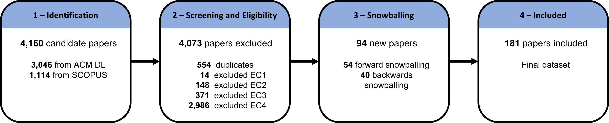
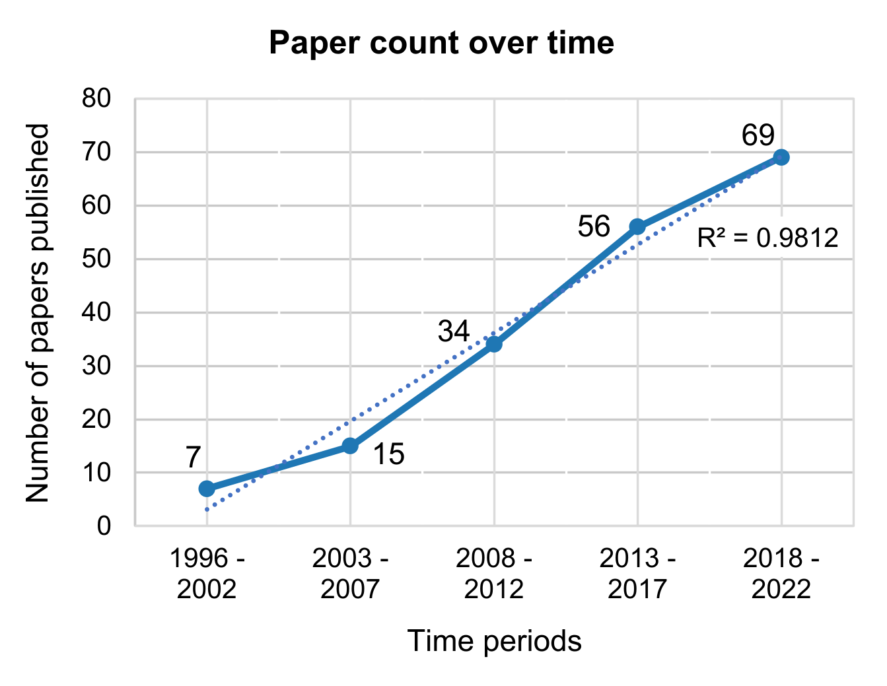

Accessibility Research in Digital Audiovisual Media: What Has Been Achieved and What Should Be Done Next?
Authors
- Alexandre Nevsky, King’s College London, London, UK. alexandre.nevsky@kcl.ac.uk
- Timothy Neate, King’s College London, London, UK. timothy.neate@kcl.ac.uk
- Radu-Daniel Vatavu, MintViz Lab, MANSiD Center, Ştefan cel Mare University of Suceava, Suceava, Romania. radu.vatavu@usm.ro
- Elena Simperl, King’s College London, London, UK. elena.simperl@kcl.ac.uk
ACM International Conference on Interactive Media Experiences (IMX ’23), June 12–15, 2023, Nantes, France
Abstract
The consumption of digital audiovisual media is a mainstay of many people’s lives. However, people with accessibility needs often have issues accessing this content. With a view to addressing this inequality, there exists a wide range of interventions that researchers have explored to bridge this accessibility gap. Despite this work, our understanding of the capability of these interventions is poor. In this paper, we address this through a systematic review of the literature, creating a dataset of and analysing N=181 scientific papers. We have found that certain areas have accrued a disproportionate amount of attention from the research community – for example, blind and visually impaired and d/Deaf and hard of hearing people account for 93.9% of papers (N=170). We describe challenges researchers have addressed, end-user communities of focus, and interventions examined. We conclude by evaluating gaps in the literature and areas that could use more focus on in the future.
CCS Concepts
Human-centered computing: Accessibility technologies
Keywords
- Accessibility
- systematic literature review
- audiovisual
- digital media
- dataset
Introduction
Audiovisual media pervades everyday life – we encounter TV broadcasts, films, and streaming content as part of our daily lived experience. The consumption of audiovisual media is a vehicle through which we engage socially, e.g. through shared viewing experience; civically, e.g. through access to news and current affairs; and culturally, e.g. through film and television series which embody human values and traditions. Access to media is, then, integral to participation in modern society, “vital to informed political knowledge” [152] and critical to maintaining contact with the world beyond our surroundings.
Despite its importance, audiovisual media and its enabling technologies are not always accessible. Audiovisual media itself is intrinsically complex – not only do audio and visual information present access challenges, but the inherent complexity of their combination can introduce further cognitive [189] and language [31] barriers. Further, while most media is currently consumed with conventional technologies, such as television [77] and smartphones [213], advances have and will introduce novel ways of enjoying audiovisual media – e.g. virtual, augmented and mixed reality (VR/AR/MR) [115, 124, 144]. While these technologies might afford new possibilities in terms of access, they also risk excluding users if their design is not considered with access at their core. Given the shift we currently see in the field of how audiovisual media is created and consumed, we are faced with an important moment to reflect on the accessibility work the community has done to understand how to address future challenges.
According to a review published by [200] on media accessibility research at IMX/TVX found that only 4.2% of papers addressed users with disabilities. Although recent interventions for hard of hearing (DHH) people [207], blind and visually impaired (BVI) [220], and users with intellectual and developmental disabilities (IDD) [189], highlight an important avenue of research, we still see an under-representation. In this paper, we aim to extend this work and understand the current state of accessibility research in our field and set a direction for its future. To this end we have conducted a systematic literature review (SLR) focusing on accessibility interventions for digital audiovisual media, finding 181 papers spanning a 27-year period (1996–2022). Modelled on prior SLR of accessibility research [45, 108], we manually coded these papers focusing on the accessibility challenges faced by disabled communities (type of content, viewing device, viewing context, type of challenge), what disabled communities are included (community of focus, participant groups, use or proxies and ability-based comparison), and what accessibility interventions were explored (user study method and location, participatory design, contribution type, and type of intervention). By focusing on these categories, we answer the following research questions:
- What are the main accessibility challenges faced by people with disabilities when accessing digital audiovisual media?
- Who does accessibility research in audiovisual media focus on?
- What interventions are used to help support different accessibility needs?
This paper has three main contributions: (1) a dataset of 181 coded papers on accessibility interventions for digital audiovisual media in line with the PRISMA 2021 guidelines [161]; (2) an overview of research trends, analysis of areas that are over- and under-represented in the scientific literature, and identification of how this research is conducted and with what communities; (3) recommendations for future research, including areas which could use more attention and methodological aspects.
Method
We systematically reviewed scientific literature using the PRISMA method [161], following additional guidelines from [187] and [186]. We first consider the scope of the SLR by defining requirements for the papers, secondly we discuss the steps involved for the creation of the dataset, and thirdly we describe the qualitative and quantitative analysis we conducted.
Scope
Access to novel interactive media experiences cannot be left as an afterthought. To this end, it is vital that we understand and embody inclusive design practices to accommodate for diverse accessibility needs. Prior work surfaces access challenges across the technology spectrum – from the interaction challenges for TV [20], to VR [124], affecting people with visual [213], hearing [41], cognitive [205], and motor impairments [88]. While much research has been published about individual accessibility interventions, there has so far been no broad survey of the literature that gives a general understanding of what this field has explored, and the gaps that currently exist in our knowledge of accessibility challenges and interventions. Within the broader scope of accessibility in Human-Computer Interaction (HCI), [108] have conducted a systematic review at ACM CHI and ACM ASSETS, finding that the presence of accessibility research at CHI has increased steadily, accounting for around 8% of all papers published in 2019, as well as noting a clear deficit in certain areas. There have also been more targeted reviews that examined specific communities, such as [25] exploring scientific papers published on technologies designed for people with visual impairments, or [19] exploring patterns, themes, and active research communities addressing assistive technologies for people with visual impairments. Additionally, there have been overviews of specific accessibility interventions, such as collaborative technologies for children with special needs [16], or reviews of specific interactions with media technologies, such as eye tracking research among the DHH community [2]. The focus of our work, however, aims at examining literature on accessibility interventions, which includes a wide range of communities and technologies. This differs with previous reviews, as the scope is focused on a subset of accessibility technologies, going into greater depth on this particularly timely and relevant topic. Therefore, to better focus this SLR and answer our research questions, we have limited our scope specifically to interventions which improve the accessibility of audiovisual media, and we have defined three requirements for our SLR:
- Digital audiovisual media – we have limited our scope to digital audiovisual media. This requirement excludes any paper that explores issues in non-digital media, such as live performances (e.g. [198]), and media that does not have both audio and visual components, such as radio broadcasts (e.g. [225]).
- Accessibility interventions – the eligible paper must address an intervention or interventions that aid in making the piece of media more accessible. These include such interventions as subtitles (e.g. [69]), audio description (AD) (e.g. [91]), second screen aids (e.g [207]), audio and/or video manipulation (e.g. [42, 184]), or customization (e.g. [85]).
- Media content accessibility – the eligible paper must address the accessibility of a piece of content, not the platform on which the content is consumed (e.g. [191]) or any interactions with said platform (e.g. [143]).
Dataset Creation

We used the guidelines outlined by [186] to generate our dataset of scientific papers on the topic of digital audiovisual media accessibility, which includes identification of papers, screening for potential inclusion, and determining eligibility for inclusion. Additionally, we conducted reference snowballing following guidelines by [227]. Figure 1 summarises the process.
Identification
With the goal to find literature in HCI and digital audiovisual media accessibility, we chose to conduct our search using three major electronic databases for Computer Science and HCI research: the ACM Digital Library, SCOPUS, and IEEE Xplore. These databases offer a wide range of publication venues, including CHI and ASSETS, which are the two most popular venues for accessible computing [108]. Through an iterative approach, we chose to use generic truncated keywords, such as “access*” and “impair*”, as opposed to specific terms, such as “deaf”, as to not bias the search with our own terming. To focus the search towards audiovisual media, we also included other relevant keywords, such as “video”, “television”, and “audiovisual”. Initial searches using these keywords returned papers on areas we were not relevant, such as video games, so we excluded them in our search. While much work is being done with video game accessibility, we believe that video games belong to a different class of entertainment applications than the conventional audiovisual media we focused on in terms of consumption, user engagement, and interactivity of the content. We focused our search on the title, abstract and keywords of the papers, as testing with full-text search resulted in a large search space, including many false positives. The final search query, below, for the ACM DL returned 3,046 papers.
Title:((video OR tv OR television OR broadcast* OR audiovisual OR "audio visual" OR "audio-visual") AND (access* OR disab* OR impair*) AND NOT (game OR games OR videogame OR videogames OR "video game" OR "video games")) OR Abstract:((video OR tv OR television OR broadcast* OR audiovisual OR "audio visual" OR "audiovisual") AND (access* OR disab* OR impair*) AND NOT (game OR games OR videogame OR videogames OR "video game" OR "video games")) OR Keyword:((video OR tv OR television OR broadcast* OR audiovisual OR "audio visual" OR "audiovisual") AND (access* OR disab* OR impair*) AND NOT (game OR games OR videogame OR videogames OR "video game" OR "video games"))
Running the same query on SCOPUS and IEEE Xplore resulted in significantly more results, with over 75,000 for SCOPUS and over 17,000 for IEEE Xplore. This high number of results is likely due to using common keywords (e.g., “video”) and truncated keywords (e.g., “access*”). To deal with this large number of results, we limited the venues searched by having an author go through every venue in the database filter with over 25 papers and manually checked the 25 most relevant papers using the built in relevancy sort. A venue was excluded if less than 10% (≤ 3) of the 25 papers were deemed relevant. This resulted in the following final search query for SCOPUS, which returned 1,114 papers:
TITLE-ABS-KEY((video OR tv OR television OR broadcast* OR audiovisual OR "audio visual" OR "audio-visual") AND (access* OR disab* OR impair*) AND NOT (game OR games OR videogame OR videogames OR "video game" OR "video games")) AND (LIMIT-TO(EXACTSRCTITLE, "ACM International Conference Proceeding Series") OR LIMIT-TO(EXACTSRCTITLE, "Communications In Computer And Information Science") OR LIMIT-TO(EXACTSRCTITLE, "Conference On Human Factors In Computing Systems Proceedings") OR LIMIT-TO(EXACTSRCTITLE, "Procedia Computer Science") OR LIMIT-TO (EXACTSRCTITLE, "Conference on Computers and Accessibility") OR LIMIT-TO(EXACTSRCTITLE, "Interactive Experiences for TV and Online Video") OR LIMIT-TO (EXACTSRCTITLE, "Interactive Media Experiences") OR LIMIT-TO(EXACTSRCTITLE, "European Conference on Interactive TV and Video") OR LIMIT-TO(EXACTSRCTITLE, "IEEE Transactions On Multimedia") OR LIMIT-TO(EXACTSRCTITLE, "Conference On Computer-Supported Cooperative Work And Social Computing"))
Running a similar venue exclusion step on the IEEE Xplore database returned no relevant venues. This is likely due to accessibility research being primarily published elsewhere outside of IEEE venues, such as ACM CHI and ACM ASSETS being two of the largest venues [108]. Therefore, we chose not use IEEE Xplore for the dataset creation. The two queries were ran on 02/09/2022 and returned a total of 4,160 papers ranging from 1925–2022.
Screening and Eligibility
To remove all papers that were not within our scope, we followed the PRISMA 2021 guidelines [161] and created four eligibility criteria (EC1–EC4):
- Availability of text – the full text of the paper must be available in English.
- Peer reviewed research – the paper must be a piece of peer reviewed research, which includes conference papers, journal articles, posters, etc.
- Digital audiovisual media – the paper must focus on digital audiovisual media.
- Accessibility intervention – the paper has to explore an intervention to increase the accessibility of the content.
We continued with a screening step, starting by removing 554 (13.3%, 554/4610) duplicate papers. We then considered the remaining papers and excluded papers based on the eligibility criteria EC1–EC4 (see Table 1). We initially checked titles and abstracts to quickly remove any irrelevant papers, erring on the side of caution when unsure to not remove a relevant paper. Following this, the full text of the papers was read to determine eligibility. A spreadsheet was created in which each paper was labelled as relevant or irrelevant, with irrelevant papers also including the EC that excluded it. For example, the high number of papers excluded by EC4 were due to not being about accessibility in general, with a high number of more technical topics including video processing [157] or video transcoding [104]. There were also papers that explored some aspect of accessibility and audiovisual media, but did not investigate the use of interventions to make the content more accessible, instead using the content in a medical context [22] or exploring some aspect of disability [165]. While many of these papers could have been excluded by EC3 or EC4, the high number of technical papers that had nothing to do with accessibility made it easier to initially filter and exclude by EC4. After completing the screening and eligibility check, N=87 papers were deemed relevant.
Snowballing
Following the screening and eligibility review, we conducted a snowballing step as outlined by [227], which identified a total of N=94 new papers. We performed four iterations of forward and backward snowballing until no new candidate papers were identified. Each iteration followed the same screening and eligibility verification as mentioned in Subsection 2.2.2, with backwards snowballing initially relying on paper title, authors, and publication venues. We used Google Scholar for the forward snowballing. In cases where the information present on Google Scholar was insufficient for making a decision, the full text of the citing paper was studied. A total of 54 papers were identified through forward snowballing and 40 papers were identified through backwards snowballing. This puts the final total number of papers in our dataset to 181, with 87 (48.1%, 87/181) identified through the identification and screening steps, and 94 (51.9%, 94/181) through snowballing, which is in line with the expected proportion of papers obtained through snowballing [71].
| Eligibility Criteria | Number of papers |
|---|---|
| Duplicate papers | 554 (13.3%) |
| EC1 - Availability of text | 14 (0.3%) |
| EC2 - Peer reviewed research | 148 (3.6%) |
| EC3 - Digital audiovisual media | 371 (8.9%) |
| EC4 - Accessibility intervention | 2,986 (71.8%) |
| Total relevant papers | 87 (2.1%) |
| Category | Codes | Multiple codes | Pairwise agreement | IRR | Level |
|---|---|---|---|---|---|
| Type of content | TV broadcast; on-demand video; web video; live video; other | Yes | 72.2% | 0.477 | Moderate |
| Viewing device | Television; desktop; smartphone; tablet; big screen; other | Yes | 88.9% | 0.911 | Almost perfect |
| Viewing context | General viewing; education; commercial; other | Yes | 94.4% | 0.660 | Substantial |
| Type of challenge | Viewing video; hearing audio; reading subtitles; understanding speech; following narrative; image clarity; on-screen clutter; other | Yes | 72.2% | 0.493 | Moderate |
| Community of focus | BVI; DHH; motor/physical impairment; autism; IDD; other cognitive impairment; older adults; general disability; other | Yes | 83.3% | 0.851 | Almost perfect |
| Participant groups | No user study; people with disabilities; people without disabilities; older adults; specialists; caregivers | Yes | 88.9% | 0.781 | Substantial |
| Use of proxies | Yes; no | No | 94.4% | 0.444 | Moderate |
| Ability based comparison | Yes; no | No | 94.4% | 0.444 | Moderate |
| User study method | Controlled experiment; survey; usability testing; interviews; case study; focus group; field study; workshop/design; other; none | Yes | 66.7% | 0.774 | Substantial |
| User study location | No user study; near/at researcher’s lab; participant’s home, residence, or school; neutral location; online/remote; other | Yes | 72.2% | 0.775 | Substantial |
| Participatory design | Yes; no | No | 88.9% | 0.654 | Substantial |
| Contribution type | Empirical; artifact; methodological; theoretical; dataset; survey; opinion | Yes | 77.8% | 0.910 | Almost perfect |
| Type of intervention | Subtitles; audio description; tangible device; sign language; audio or video manipulation; content personalization; customization; in-person assistance; second screen; other | Yes | 77.8% | 0.837 | Almost perfect |
Analysis
We qualitatively coded the N=181 papers in our dataset and analysed paper and participant counts over the 27-year period. We also extracted and examined keywords frequencies for all papers in out dataset. The qualitative coding was performed by two authors, and a Fleiss’ Kappa inter-rater reliability (IRR) [56] calculation was performed. The results of the qualitative coding were compared to results reported by [108] on the state of the broader HCI accessibility field. We chose to compare to this paper because of its broad scope of HCI accessibility research (N=506 analyzed papers), as well as the robust method used to construct and code the dataset. Other reviews we could compare against tend to have more narrow scopes, such as focusing on specific communities [25], technologies [16], or smaller venues [200].
Qualitative Analysis
To analyse the dataset, we first created a codebook, which was done by three researchers. The three researchers discussed the codes over a period of time, with a sample of 10 papers being coded at each iteration to better understand how that codebook would work. It is important to note that the creation of this codebook, along with the screening of papers and any analysis we have conducted, is subject to the inherent biases of the researchers, all of whom identify as white, cisgender male and female of European background. None of the researchers involved with the development and analysis of the dataset identify as disabled, with two researchers having prior experience doing accessibility research. The codebook was generated using an iterative approach, with codes chosen to answer our research questions. The final codebook can be seen in Table 2, including 13 categories each with 2-11 sub-codes each. For most of the categories, except for the exclusive binary categories, more than one code could be applied to a paper. This causes the percentages used in Section 3 to have a sum that does not equal to 100%.
Of the 13 categories, 5 were developed by the researchers and 8 were adapted from [108]. The categories developed by the researchers aimed to understand the characteristics of current and past trends in audiovisual media accessibility interventions research. These include the context in which the media is being consumed – such as the device being used, the environment in which the viewer consumes the content, and type of content being consumed – the challenges faced by the users, and the accessibility intervention being researched. The categories adapted from [108] were used to compare with more general accessibility research, as well as generate insights into the user study methods and what communities research is focused on. Once the codebook was finalised, two researchers coded the papers with the second researcher coding a random sample of 10% (N=18) of papers (see Table 2).
Quantitative Analysis
We programmatically analysed paper and participant counts, and keyword frequencies over the 27-year period. We calculated mean, median, IQR and SD values for the participant counts, as well as analysed them with regard to the community of focus, the participant groups, and the use of proxies and ability based comparison. For the keyword analysis, we extracted 660 unique keywords, of which 209 (31.7%, 209/660) occurred at least twice. A researcher manually went through the 209 keywords and grouped similar keywords – for example, the keywords “blind”, “blindness”, and “blind people” were all combined into a higher-order grouping “BVI”. Sixteen such groupings were created, with three of these to group British English and American English spelling of keywords (e.g., “personalisation” and “personalization”). Of the 181 papers in the dataset, 13 (7.2%, 13/181) contained no keywords.
Results
We present the results of our analysis in terms of accessibility challenges addressed, communities and participants involved, research methods and interventions. Following this, we look at trends over the 27-year period and quantitative results from the keyword analysis.
Accessibility challenges addressed
To understand the kinds of accessibility challenges people with disabilities face when accessing digital audiovisual media, we analyze the context in which the media is consumed that researchers focused on. These included the type of content, viewing device, and the type of challenge the researchers address.
Type of content
As shown in Table 3, research in this field is relatively balanced between TV broadcast content (32.0%, 58/181), video-on-demand (30.9%, N=56), and web video (24.9%, N=45). Only one paper focused on live video (0.6%), which looked at allowing DHH students to pause and highlight subtitles during a live video stream of educational content [100]. Papers labelled as “other” accounted for 21.5% (N=39) of all papers, which for the most part included papers where the authors do not specify the type of content their research is focusing on. These also include research on content not listed, such as immersive 360∘ video [24, 140, 189] or interactive audiovisual experiences that allow DHH and BVI users to hear colors or see sounds [33]. Papers with more than one code accounted for 7.7% (14/181) of all papers, mostly looking at web-based VOD platforms (42.9%, 6/14) or exploring TV accessibility features that applied to both TV broadcasts and VOD content (35.7%, 5/14).
| Type of content | Papers with code | This code only | Viewing device | Papers with code | This code only | Viewing context | Papers with code | This code only |
|---|---|---|---|---|---|---|---|---|
| TV broadcast | 58 (32.0%) | 50 (27.6%) | Television | 83 (45.9%) | 66 (36.5%) | General viewing | 148 (81.8%) | 137 (75.7%) |
| VOD | 56 (30.9%) | 43 (23.8%) | Computer | 59 (32.6%) | 48 (26.5%) | Educational | 14 (7.7%) | 12 (6.6%) |
| Web video | 45 (24.9%) | 36 (19.9%) | Smartphone | 18 (9.9%) | 1 (0.6%) | Commercial setting | 7 (3.9%) | 2 (1.1%) |
| Live video | 1 (0.6%) | 1 (0.6%) | Tablet | 11 (6.1%) | 0 (0.0%) | Other | 23 (12.7%) | 19 (10.5%) |
| Other | 39 (21.5%) | 37 (20.4%) | Big screen | 7 (3.9%) | 1 (0.6%) | |||
| Other | 48 (26.5%) | 38 (21.0%) |
Viewing device
When it came to viewing device, almost half of papers studied television (45.9%, 83/181), followed by desktop/laptop computers (32.6%, N=59). A relatively smaller number of papers focused on smartphones (9.9%, N=18), tables (6.1%, N=11), and big screen viewing (3.9%, N=7). An additional 26.5% (N=48) of papers had the label “other”, which, again, included papers where the viewing device was not specified by the authors, such as papers that focused on development of accessibility software or algorithms [177]. There were also papers that looked at other devices, such as research on the use of subtitles with virtual reality headsets [83], or the use of various haptic devices, including small tactile robots that move over a tablet [73].
A total of 27 papers (14.9%, 27/181) contained more than one viewing device. The codes that occurred together the most were “smartphone” and “tablet” (37.0%, 10/27), which is 55.6% (10/18) of all papers that looked at smartphones, and 90.9% (10/11) of those looking at tablets. The only paper that focused on a tablet without a smartphone device was [73]. Smartphones (37.0%, 10/27) and tablets (18.5%, 5/27) were also used heavily in conjunction with TV. Papers explored “desktop” viewing alongside with smartphones (29.6%, 8/27), tablet devices (25.9%, 7/27), and TV (18.5%, 5/27). For the most part, these papers explored some system that happen to work on multiple devices, such as a subtitling system for Arabic script that visualizes voice characteristics of the speaker [179] which worked on desktop, smartphone and tablet devices. Some papers, however, did utilize smartphones or tablet devices as a second screen to make the media on the main screen more accessible in some way, such as using a smartphone to display subtitles in a cinema [41, 61]. When it comes to the “other” label, the most common crossover was with TV (25.9%, 7/27), including a paper evaluating the use of AR sign language interpreter while watching TV by using a head-mounted displays [207], and a system that communicates the emotional state of a TV movie through environmental lighting, emotive subtitles, and mobile application [1].
Viewing context
The results for viewing context of the media were somewhat one-sided, with most papers being on general viewing (81.8%, 148/181), followed by education (7.7%, N=14) and commercial settings (3.9%, N=7). This is primarily due to research focusing on making audiovisual media accessible in everyday situations, such as at the viewer’s home [1, 63, 114]. Papers that focused on educational context tended to explore ways to improve or automate subtitling [85, 100]. One paper explored ways to make immersive video experiences accessible to support people with intellectual disabilities learn new skills [189]. Within commercial contexts, most papers focused on creating second-screen accessibility aids to make content more accessible in cinemas, such as through adding personal subtitles [41] or AD [213] using the viewers smartphone. Papers labelled as “other” (12.7%, N=23) included research that did not explore a specific intervention, such as a general overview of subtitling practices and challenges faced by DHH YouTube content creators [103], or included a unique context, such as making security surveillance video accessible to BVI users [27].
Challenges addressed
| Challenge addressed | Papers with code | This code only |
|---|---|---|
| Viewing video | 78 (43.1%) | 37 (20.4%) |
| Hearing audio | 22 (12.2%) | 3 (1.7%) |
| Reading subtitles | 77 (42.5%) | 49 (27.1%) |
| Understanding speech | 17 (9.4%) | 6 (3.3%) |
| Following narrative | 36 (19.9%) | 3 (1.7%) |
| Issues with image | 10 (5.5%) | 2 (1.1%) |
| Screen clutter | 0 (0.0%) | 0 (0.0%) |
| Other | 37 (20.4%) | 8 (4.4%) |
| Community of Focus | Papers with code | Mack et al. | This code only | Mack et al. | Participant Group | Papers with code | Mack et al. | This code only | Mack et al. |
|---|---|---|---|---|---|---|---|---|---|
| BVI | 83 (45.9%) | 43.5% | 70 (38.7%) | 41.1% | People with disabilities | 104 (81.9%) | 84.7% | 66 (52.0%) | 44.9% |
| DHH | 97 (53.6%) | 11.3% | 77 (42.5%) | 8.5% | People without disabilities | 51 (40.2%) | 32.1% | 20 (15.7%) | 1.0% |
| Motor impairment | 3 (1.7%) | 14.2% | 0 (0.0%) | 11.7% | Older adults | 7 (5.5%) | 8.4% | 1 (0.8%) | 3.1% |
| Autism | 0 (0%) | 6.1% | 0 (0.0%) | 4.2% | Specialists | 8 (6.3%) | 17.0% | 1 (0.8%) | 1.9% |
| IDD | 1 (0.6%) | 2.8% | 0 (0.0%) | 1.6% | Caregivers | 1 (0.8%) | 9.4% | 0 (0.0%) | 0.8% |
| Other cognitive | 6 (3.3%) | 9.1% | 0 (0.0%) | 5.7% | |||||
| Older adults | 8 (4.4%) | 8.9% | 2 (1.1%) | 5.7% | |||||
| General disability | 16 (8.8%) | 9.1% | 8 (4.4%) | 6.1% | |||||
| Other | 5 (2.8%) | 9.1% | 0 (0.0%) | 4.0% |
As can be seen in Table 4, the most common challenges researchers addressed were viewing video (43.1%, 78/181) and reading subtitles (42.5%, N=77). This comes mostly in the form of papers implementing AD to help BVI people [220], or ways to implement or improve subtitles [94]. Other challenges authors addressed include following narrative (19.9%, N=36), hearing audio (12.2%, N=22), and understanding speech (9.4%, N=17). We included a code for “screen clutter” as a challenges, as an initial manual look through broader media accessibility literature included this challenge, such as research on dementia-friendly TV news broadcast, which found that clutter on the screen distracted viewers [59]. However, no paper in our dataset focusing on accessibility interventions attempted to address this challenge. The code “other” accounted for 20.4% of papers (N=37) and included papers on increasing the understanding of emotional information [1] and papers on facilitating BVI to consume media content in group environments with personal AD using acoustically transparent headsets [114].
Papers could be labelled with multiple codes, with 73 papers (40.3%, 73/181) falling under this category. The most common pairing being “viewing video” and “other” (26.0%, 19/73), with multiple papers addressing both AD creation, such as through crowd-sourcing [133, 135], and AD presentation [21]. The label “following narrative” mostly occurred with the “other” labels (91.7%, 33/36), with the most common pairings being “viewing video” (N=14) and “reading subtitles” (N=12). This is primarily due to most of these papers involving using subtitles and AD interventions to help people with disabilities follow the narrative either by having visual elements described, or by having speech and other audio elements textually represented. There were also multiple papers [61, 92, 121] that explored larger systems which included multiple interventions, such as applications that addressed “viewing video” and “reading subtitles” (12.3%, 9/73) by offering both AD and subtitles [61].
Communities and participants involved
The section above analyzed the different challenges faced by people with disabilities when accessing audiovisual media, here we look at the communities and participants involved in that research. This will include the communities the research is focusing on, who participates in user studies, and the use of proxies and ability-based comparison in those studies. We will be comparing our results to the broader accessibility research space, by looking at results from [108], to get a better understanding on who research in audiovisual media accessibility focuses and what gaps exist.
Community of focus
When looking at the communities of focus within our dataset, see Table 5, the DHH (53.6%, 97/181) and BVI (45.9%, 83/181) communities stand out, accounting for 93.9% (170/181) of all papers. Other communities are under-represented in our dataset, with papers addressing “general disability” coming at a distant third (8.8%, N=16), such as interactions to make web video more accessible in a learning environment [182], a web video player designed to reduce accessibility barriers [205], or a system designed to create accessible and personalized immersive media experiences [121]. These were followed by papers aiming to help older adults (4.4%, N=8), people with other cognitive impairments (3.3%, N=6), motor impairments (1.7%, N=3), and IDD (0.6%, N=1). The label for “autism” did not appear in our dataset, while appearing in 6.1% of all papers within the Mack et al.’s [108] dataset. We also applied the code “other” (2.8%, N=5) to papers with communities of focus we did not have a label for, such as a paper on a device that would read subtitles out loud for BVI people and people with dyslexia [128], or a paper that evaluated a similar system of subtitle reading for people with reading difficulties more broadly [106].
Some papers (18.2%, 33/181) considered more than one community of focus. Only the BVI (84.3%, 70/83) and DHH (79.4%, 77/97) communities were mostly included as the sole communities of focus. Half the papers focusing on general disability (8/16) and two papers focusing on older adults (2/8) had those as sole communities of focus, with all other communities of focus only appearing with some other community. Those papers that considered multiple communities focused primarily on the DHH and BVI community pairing (30.3%, 10/33), with papers evaluating systems that included interventions for both communities, such as subtitles and AD [61, 205], or a paper by [33] that presented visual information in an auditory format and audio information in a visual format. Papers that involved more than one community tended to include the DHH community, which was paired with general disability (24.2%, 8/33), other cognitive and older adults (both 15.2%, 5/33), motor impairments (9.1%, 3/33), and the “other” label (6.1%, 2/33).
When comparing to community of focus findings by [108], the DHH community is proportionally over-represented in our dataset at 53.6% vs. their 11.3%. The BVI community is also slightly over-represented, however much less so (45.9% vs. 43.5%). Other communities are all proportionally under-represented in our dataset, as can be seen in Table 5, with motor impairment having the largest difference (1.7% vs. 14.2%), followed by autism (0.0% vs. 6.1%), which did not appear a single time.
Participant groups
Table 5 shows the frequency at which different participant groups were involved in user studies, where the percentages are calculated based on the 127 papers that ran some sort of user study (70.2%, 127/181). The majority of user studies included participants with disabilities (81.9%, 104/127), followed by people without disabilities (40.2%, N=51), specialists (6.3%, N=8), older adults (5.5%, N=7), and a single user study that included caregivers (0.8%, N=1). When it comes to papers that included more than one participant group, the most common pairing was people with and without disabilities (24.4%, N=31). People with disabilities and specialists followed at a distant second (4.7%, N=6), followed by people with disabilities and older adults occurring together in 3.9% (N=5) of user studies, and people without disabilities and older adults (3.1%, N=4). Other participant group pairings appeared either once, or did not appear in our dataset.
The paper counts are roughly in-line with the broader HCI accessibility community, with most participant groups being slightly proportionally under-represented. The most over-represented group in our dataset were people without disabilities (40.2% vs. 32.1%), and the most under-represented participant group were specialists (6.3% vs. 17.0%), caregivers (0.8% vs. 9.4%), older adults (5.5% vs. 8.4%), and people with disabilities (81.9% vs. 84.7%). When it comes to user studies with a single participant group, people with and without disabilities are slightly over-represented (52.0% vs. 44.9%, and 15.7% vs. 1.0%), while caregivers (0.0% vs. 0.8%), specialists (0.8% vs. 1.9%), and older adults (0.8% vs. 3.1%) are slightly under-represented.
| Study method | Papers with code | Mack et al. | This code only | Mack et al. | Study location | Papers with code | Mack et al. | This code only | Mack et al. |
|---|---|---|---|---|---|---|---|---|---|
| Controlled experiment | 51 (40.2%) | 11.5% | 8 (6.3%) | 11.5% | Near/at research lab | 29 (22.8%) | 27.3% | 20 (15.7%) | 19.5% |
| Survey/questionnaire | 96 (75.6%) | 1.3% | 1 (0.8%) | 1.3% | Home/residence/school | 12 (9.4%) | 28.9% | 7 (5.5%) | 17.8% |
| Usability testing | 73 (57.5%) | 41.7% | 5 (3.9%) | 9.6% | Neutral location | 6 (4.7%) | 6.7% | 1 (0.8%) | 3.1% |
| Interviews | 48 (37.8%) | 42.1% | 1 (0.8%) | 5.7% | Online/remote | 21 (16.5%) | 20.5% | 16 (12.6%) | 10.1% |
| Focus groups | 13 (10.2%) | 5.9% | 2 (1.6%) | 0.8% | Other | 73 (57.5%) | 41.1% | 71 (55.9%) | 28.1% |
| Case study | 0 (0.0%) | 4.0% | 0 (0.0%) | 0.2% | |||||
| Field study | 0 (0.0%) | 17.8% | 0 (0.0%) | 4.6% | |||||
| Workshop/design | 15 (11.8%) | 18.4% | 0 (0.0%) | 3.1% | |||||
| Other | 0 (0.0%) | 16.1% | 0 (0.0%) | 0.8% |
Proxies and ability-based comparison
Proxies were used in 10.2% (13/127) of all papers that included a user study, which is slightly higher than in the broader HCI accessibility community (10.2% vs. 8.0%). For the most part, proxies were used as stand-ins for the community of focus when giving feedback on a system or device prototype [1, 114, 205], with convenience sampling being a common reason. We also identified that 9.4% (N=12) of user studies compared participants with and without disabilities, which is slightly lower than the [108] dataset (9.4% vs. 13.6%). Participants without reported disabilities were sometimes used to represent the control against which performance, preferences, or needs of the participants with disabilities were compared [53]. Some user studies also ran cross task performance, where participants with and without disabilities were placed in separate groups [75].
Research methods for accessibility in audiovisual media
We explore research methods used and how studies are conducted, looking at study methods, the location user studies took place in, use of participatory design (PD), and we report study sample sizes.
User study methods
As can be seen in Table 6, the majority of user studies conducted used questionnaires (75.6%, 96/127) and usability testing (57.5%, N=73). Additionally, a relatively large numbers of studies employed controlled experiments (40.2%, N=51) and interviews (37.8%, N=48), with workshops and design sessions (11.8%, N=15) and focus groups (10.2%, N=13) being relatively less common. We included labels for case studies and field work in our codebook, however, our dataset does not include any papers that used these research study methods.
Of the 127 papers in our dataset that had a user study, 110 (86.6%) used more than one study method. The most common grouping of study methods was usability testing and questionnaire (21.3%, N=27), with 12.6% of papers running these two methods as well as also including interviews (N=16). Following closely were studies that ran controlled experiment and questionnaire (19.7%, N=25), with 7 more papers additionally running interviews (5.5%). Furthermore, the next most common study method was running a controlled experiment with no other methods (6.3%, N=8), which accounts for 47.1% (8/17) of all papers with a single user study method. All other combinations of methods appeared in fewer than 5% of papers.
User study locations
For the most part, we find that authors do not specify the location of their research, with 56.7% (72/127) of papers that report a user study being labelled “other”, which is mostly due to authors being unclear about the user study location. For example, [13] mention recruiting BVI participants, screening the participants through a short phone interview, the monetary compensation the participants received, the laptop the usability testing took place on, and the procedure to run the study. The authors do not, however, ever explicitly mention where the study is taking place. Among papers that do mention the location the study took place in, 23.6% (N=30) took place near or at the authors research lab, such as [93] who, in their abstract, state they ran a “laboratory study”. The second most common location was “online or remote” (16.5%, N=21), followed by at home, residence or school (9.4%, N=12), and neutral location (4.7%, N=6). Additionally, 12 papers (9.4%) ran studies in more than one location, with 5 papers having user studies ran both at a research lab and online (3.9%), and 4 in neutral locations and online (3.1%). When compared to the broader HCI accessibility community, the “other” label is quite a bit more common (57.5% vs. 41.1%). All other user study locations are under-represented, with “home, residence or school” having the largest gap (9.4% vs. 28.9%), followed by “online or remote” (16.5% vs. 20.5%), “near or at a research lab” (22.8% vs. 27.3%), and “neutral” location (4.7% vs. 6.7%).
Participatory design
Participatory design (PD) allows users of accessibility technology to be involved in the research process and directly interact with the proposed intervention, through helping understand challenges people with disabilities face [189] or taking part in the design process [205]. Within our dataset, 22 (17.3%) user studies papers adopted PD methods, which is higher than the [108] dataset (17.3% vs. 10.3%). User study papers that involved caregivers (N=1), specialists (N=6), and older people (N=4) tended to use PD methods more often than not. PD always included either people with disabilities (81.8%, 18/22), older adults (9.1%, 2/22), or both (9.1%, 2/22). User studies involving people with IDD (N=1), motor impairments (N=2), and other cognitive impairments (N=3) tended to use PD methods more often in their studies than other communities. Research focusing on BVI (N=11) and DHH (N=9) participants, as well as papers on general disability (N=2), rarely used PD.
Sample sizes
| Group | N | Median | Mean | IQR | Range |
|---|---|---|---|---|---|
| Overall | 124 | 30.0 | 52.0 | 34.3 | 2-602 |
| BVI | 58 | 20.0 | 46.4 | 27.8 | 2-602 |
| DHH | 66 | 34.0 | 59.8 | 35.8 | 9-314 |
| Motor | 3 | 25.0 | 25.0 | 5.0 | 20-30 |
| IDD | 1 | 18.0 | 18.0 | 0.0 | 18-18 |
| Other cognitive | 5 | 25.0 | 62.4 | 10.0 | 18-219 |
| Older adults | 6 | 39.0 | 64.7 | 11.8 | 16-219 |
| General disability | 4 | 17.5 | 43.0 | 34.5 | 4-133 |
| Other | 2 | 115.5 | 115.5 | 103.5 | 12-219 |
| People w/ disabilities | 102 | 30.0 | 48.9 | 37.0 | 2-602 |
| People w/o disabilities | 50 | 34.0 | 73.8 | 34.5 | 12-602 |
| Older adults | 7 | 30.0 | 30.4 | 17.0 | 16-45 |
| Specialists | 8 | 25.5 | 35.8 | 27.5 | 4-133 |
| Caregivers | 1 | 18.0 | 18.0 | 0.0 | 18-18 |
We analyzed user study sample sizes in the 124 user study papers that clearly reported a sample size, which can be seen in Table 7. For instance, [92] report running a user study, as well as reporting some user results, but do not report the total number of participants. Therefore, this paper is excluded from our analysis. Overall, the median number of participants in a user study was 30 (M=52.0, IQR=34.3, SD=73.5), which is higher than the median sample size (18) in the broader HCI accessibility community [108]. User studies that included either people with disabilities or older adults have a slightly higher median of 29.5 (Mean=47.7, IQR=39.0, SD=68.5). The median number of participants ranges from 18 (IDD) to 115.5 (Other). When it comes to participant groups, the median number of participants ranged from 18 (Caregivers) to 34 (People without disabilities). Note that there was a small number of user study papers for most communities of focus and participant groups, with only papers on the BVI (58) and DHH (66) communities, as well as user studies involving people with (102) and without (50) disabilities having double digit paper counts. These low paper counts make analyzing the sample sizes for the other communities of focus and participant group more challenging, since we cannot state much with certainty these sample sizes are truly representative.
Accessibility interventions
So far, we analyzed the challenges faced by people with disabilities, the communities and participants involved in research, and the research methods used to explore these challenges. Here, we outline the different interventions authors have researched and how these contribute to HCI literature.
| Type of intervention | Papers with codes | This code only |
|---|---|---|
| Subtitles | 87 (48.1%) | 48 (26.5%) |
| Audio description | 60 (33.1%) | 35 (19.3%) |
| Tangible device | 11 (6.1%) | 1 (0.6%) |
| Sign language | 9 (5.0%) | 2 (1.1%) |
| Audio/video manipulation | 25 (13.8%) | 9 (5.0%) |
| Content personalization | 2 (1.1%) | 0 (0.0%) |
| Customization | 25 (13.8%) | 0 (0.0%) |
| In person assistance | 0 (0.0%) | 0 (0.0%) |
| Second display | 14 (7.7%) | 1 (0.6%) |
| Voice commands | 0 (0.0%) | 0 (0.0%) |
| Other | 63 (34.8%) | 11 (6.1%) |
![On the left side of the Sankey diagram there are communities of focus, linking to the interventions used on the right. The largest communities are the DHH, BVI and general disabilities, while the most common interventions are subtitles, AD, and other. DHH mostly links to subtitles, other, customization, second display, and audio/video manipulation. BVI mostly links to audio description, other, and audio/video manipulation. General disability mostly links to subtitles and other. All other links have fewer than 10 communities of focus to papers frequency.](./figures/sankey.png)
As can be seen in Table 8, the most explored accessibility interventions were subtitles (48.1%, N=87) and AD (33.1%, N=60), which accounted for 77.3% (130/181) of all papers in the dataset. Breaking down the interventions used based on the community of focus, we find that 82.5% (N=80) of papers addressing the DHH community involved the use of subtitles, and 67.5% (N=56) of BVI papers using AD. Subtitles were also heavily used in research that focused on general disability (N=12), other cognitive impairments (N=4), motor impairments (N=2), and older adults (N=4). On the other hand, AD was mostly confined to BVI research, with only 4 papers exploring its use outside the BVI community. Figure 2 shows how different interventions were used with different communities of focus. Other popular interventions were audio and/or video manipulation (13.8%, N=25), such as a paper exploring the use of zoom magnification to help people with central vision loss [43], and customization (23.8%, N=25), such as a system allowing the viewer to customize aspects of ASL interpreting [96]. Second displays (7.7%, N=14), tangible devices (6.1%, N=11), sign language interpreters (5.0%, N=9), or content personalization (1.1%, N=2) were not widely explored. Papers were labelled as “other” (N=63) if the authors explored an intervention that we had not listed, such as allowing the user to interact with a video to bookmark sections to go back in case they had issues understanding the content [205]. We find that 40.9% (N=74) papers explored more than one intervention, with the most common combinations were the use of AD and subtitles with the “other” label. For example, [111] explored a system that uses subtitles to generate highly intelligible text-to-speech dubbing of content for DHH people, so that speech is easier to distinguish from other sounds. Other pairing of interventions mostly (77.0%, 57/74) saw the use of subtitles and/or AD with some other interventions. Looking at research contribution types, as outlined by [226], most of the papers in our dataset fall into artifact (56.4%, N=102), empirical (44.8%, N=81), and theoretical (30.9%, N=56) contributions.
Trends and keywords

Our analysis of qualitative coding in the previous sections looked at the overall state of research. Here, we are going to look at the evolution of accessibility research over the 27-year period, analysing how communities of focus, challenges and interventions, and user studies have shifted over time. In order to smooth out year-on-year changes and generate a more general idea of trends, we binned papers into five time periods: 1996–2002, 2003–2007, 2008–2012, 2013–2017, and 2018–2022. It is also important to note that this research was conducted prior to the end of 2022, so papers published at the end of the year, as well as papers published earlier but had not yet have the chance to be cited, would not appear in our dataset, which could limit the occurrence of more novel interventions. As can be seen in Figure 3, the number of papers published on accessibility interventions increases steadily over time, with 7 papers published between 1996 and 2002, and 69 papers published between 2018 and 2022. We also report programmatic analysis of keyword trends.
Community of focus
As one would expect by looking at the overall community of focus data, the DHH and BVI communities make up the majority of the focus in papers published in each time period, appearing in more than 90% of papers for each time period. We also find that research on interventions for “general disability” starts showing up in the 2008 to 2012 period, somewhat replacing the “other” label which sees a steady decline from 1996 to 2007 (from 14.3% to 2.9%). Other communities of focus do not show any significant trends, appearing in some time periods but not others, such as research on interventions for older adults not appearing in the 2003 to 2008 and the 2018 to 2022 periods, while having modest showings in the 1996 to 2002 (14.3%), 2008 to 2012 (8.8%), and 2013 to 2018 (7.1%) periods.
When it comes to participants involved in user studies, we see people with and without disabilities make up much of the participation, with a combined presence in at least 81.4% of all user study papers published in all period. The dip in relative participation for people with and without disabilities in 2013 to 2017 co-insides with the relative increase of older adults (10.2%) and specialists (8.5%) participation.
Challenges and interventions
When it comes to challenges addressed, we see two major foci – viewing video and reading subtitles – combine to account for more than half of papers, generally increasing with time from 57.1% in the first period to 91.3% in the most recent. Other challenges also get addressed at a relatively constant rate, with relatively high presence between 1996 and 2007, and again between 2013 and 2017. Interestingly, in the 5-year period between 2013 to 2017, we see a significant increase in the raw number of papers published that address challenges of hearing audio (from 5 in all previous periods to 13 papers in this period), following narratives (from 12 to 13 papers), understanding speech (from 5 to 8 papers), and “other” challenges (from 7 to 16 papers) compared to the prior 17 years. This explains the relative decrease in prevalence of viewing video and reading subtitles, more so than those challenges seeing a decrease in interest.
The accessibility interventions researched have a similar pattern to previous categories, with the two major topics of focus being subtitles and AD. The prevalence of these, however, generally decreases with time, from 77.8% to 46.5%, in favour of other interventions. Interventions labelled as “other”, for instance, sees an initial increase followed by a decrease. While no other intervention accounts for a substantial portion of the paper count, there is a general increase in the number of interventions being researched, with second displays and sign language interpretation seeing more focus recently, with 10.1% and 7.2% in the most recent period respectively.
![This figure shows four stacked area charts, representing the relative number of papers that address some category for each time period. The top left chart shows community of focus, where DHH and BVI communities are dominant throughout. The top right chart shows the type of device studied, where TV gradually declines over time in favour of desktops from 2003 to 2017, and the sudden increase of smartphones and tablets starting in the 2013 to 2017 period. The bottom left shows challenges addressed over time, where viewing video and reading subtitles are the largest areas, however, see a slight decline after the 2008 to 2012 period, but no other challenge really stands out as. Finally, the bottom right shows the type of intervention over time, in which subtitles, audio description and “other” take up most of the space in all periods, with a slight increase in other interventions in the 2013 to 2022 periods.](./figures/over_time.png)
User studies
User studies are common in each time period, dipping slightly in the 2003 to 2007 period before gradually increasing, as can be seen in Table 4. The distribution of user study methods is constant, with questionnaires, usability testing, controlled experiments, and interviews generally being the most common methods throughout. We see a small number of papers that run workshops or design sessions, as well as the appearance of focus groups starting in the 2008 to 2012 period.
The location of these user studies, for the most part, are labelled as “other” due to the unclear nature of location reporting by authors. Excluding those, we are left with 55 user study papers that have explicitly stated the location of their user study. Among this, albeit small, sample, we can see an interesting pattern. The proportion of user studies that take place at neutral locations and homes, residences and schools decrease over time, being somewhat replaced by online and remote user studies, especially in the most recent time period (65.4%). Looking at year on year data, we can see that there is a significant increase in online and remote user studies, with 4 such studies occurring prior to 2020 and 17 after. This is more than likely due to the COVID-19 pandemic forcing researchers to run their studies remotely. Device distribution sees a steady decrease in focus on TV from 85.7% to 37.7% with time, being steadily replaced initially by desktops, followed by the emergence of smartphones and tablets starting in the 2013 to 2017 period. Devices labelled as “other”, which includes papers where no device was explicitly mentioned, are also relatively common over the time periods.
Keywords
The frequency at which keywords were used in our dataset tends to match the qualitative coded data we manually collected from the papers. The only communities of focus in the 10 most common keywords were the BVI (64) and DHH (28) communities, the only interventions being subtitles (73) and AD (67). We also see the gradual decline in research focusing on TV (from 13.3% to 6.3%) and film (from 5.1% to 0.6%) over time. Research focusing on AD rises quickly, becoming the most frequently used keyword in the 2008 to 2012 period (12.1%), before falling in popularity (6.5% in the most recent period), while subtitles saw steady use in most periods, up to 11.3% in 2018 to 2022. We also see the appearance of artificial intelligence (AI) and machine learning (ML) as a technology in the 2013 to 2017 period and increasing significantly in the next (0.3% and 3.9%), such as AI and ML systems to automate existing interventions [220, 231]. In contrast, the web and online keywords see a rise to 6.1% in the 2008 to 2012 period, before steadily decreasing to 1.5% more recently. The use of the “accessibility” keyword sees a steady increase year-on-year, from 2.6% in 2003 to 2007 and increasing to 11.0%, which aligns with findings by [108] suggesting accessibility as a field of research is growing.
Discussion
Our SLR regarding research on accessibility interventions for audiovisual media has described the current state of the field and presented areas that have received disproportionate attention when compared to the HCI accessibility field more broadly. We will now examine our findings to answer our research questions on what challenges are faced by people with disabilities when accessing audiovisual media and what interventions researchers have focused on to help support these requirements, as well as who this research focuses on. Furthermore, we will highlight areas of potential future improvement, proposing directions for future researchers.
Challenges faced by people with disabilities when accessing digital audiovisual media
To answer RQ1, on the main accessibility challenges faced by people with disabilities when accessing digital audiovisual media, we examined the accessibility challenges researchers addressed in their papers, including the type of content, viewing device, and viewing context. Through our analysis, we observed that research tends to focus on more traditional areas of audiovisual media consumption, for instance looking mostly at general viewing context (81.8%), with the device usually being TV (45.9%) or desktop (32.6%), and a preference for TV broadcasts (32.0%) and video on demand (30.9%). These include work by [195] on subtitle presentation rate and [229] on the use of real-time edge detection and image enhancement on TV broadcasts. While it makes sense to improve the accessibility of more common media consumption patterns, this has left some major gaps that future research should acknowledge and try to fill. For instance, relatively few papers that explore issues such as “following narrative”, “hearing audio”, and “understanding speech”, with most of these papers using subtitles to address the challenge. We see that alternative methods that leverage novel technologies exist, such as the use of object based audio technologies [183, 221], however, these accessibility challenges should get more attention with a greater variety of interventions. Moreover, with an increased interest in novel media consumption patterns such as immersive AR and VR content, the variety of accessibility challenges explored should reflect these shifts.
We also see that research on mobile devices, such as second screen subtitles using a mobile device [120], has received relatively less attention. The use of mobile devices has, in recent years, seen a significant increase in popularity [46, 162], greater than what we see in our dataset (see Figure 4). Moreover, current research primarily focuses on applying existing accessibility interventions to mobile devices [41, 92, 167]. This leaves a significant accessibility gap for viewing patterns for people with disabilities, especially when it comes to novel types of content, such as short form social media content such as TikTok [219]. We, therefore, call for researchers to explore the specific accessibility challenges of accessing media on mobile devices, both as the main viewing device and as a second screen, in order to make this popular viewing pattern accessible to people with disabilities. Another area that has not been much explored is live streaming video content, which has also seen a significant increase in viewership in the past couple years [76, 228]. The real time aspect of this type for content could allow for interesting new accessibility interventions, such as exploring the use of real time caption highlighting and pausing of live streamed content to help DHH students follow along [100]. Similar techniques that use the real time aspect of live streaming could be leveraged by future researchers to improve accessibility of this type of content.
Communities of focus for accessibility research in audiovisual media
When examining our results to respond to RQ2, on who accessibility research focus on, we find that an overwhelming majority of papers focus on the DHH and BVI communities. Considering we are looking at audio and visual media, interventions addressing communities that have hearing or visual impairments are well represented. This has left other communities significantly under-represented within our dataset, such as autism (0.0%), IDD (0.6%), and other cognitive impairments (3.3%). The challenges these communities face when accessing audiovisual media differ from the DHH and BVI communities and require different approaches to improving access [163], and therefore should receive more standalone attention when exploring accessibility interventions. Older adults were also under-represented, along with disability communities we had not explicitly labelled, such as aphasia or dementia, both being disabilities that occur more often in older adults and likely to become more prominent with an aging population [126, 199]. Language impairments such as aphasia require more specialized accessibility interventions, as common interventions (e.g., subtitles) are unlikely to help fully bridge the accessibility gap [72, 173]. The under-representation of these communities and their prevalence within the broader accessibility HCI research community suggest that this is an area of potential growth in the future.
As [15] suggest, there is a tendency to use PD as “simply the involvement of any stakeholder” in user studies. A high number of papers in our dataset that fall under this category of PD, in which participants with disabilities are involved in a limited context, often a single small feedback session. PD allows researchers to better understand participants needs and helps design interventions that are more adapted to the people who ultimately use said intervention [117]. For instance, using PD to iterate through designs, which initially can be done using paper-based prototypes, allows the final design to align with users needs and expectations [88, 210]. We, therefore, encourage future user studies to involve people with disabilities more directly, as well as encourage researchers to involve specialists and caregivers more often, as both these participant groups have the possibility to present insights or aid participants with disabilities [29].
Interventions for addressing accessibility in audiovisual media
In answering RQ3, on what interventions are used to help support different accessibility needs, we examined user study methods used and accessibility interventions explored. When it comes to the types of interventions explored, subtitles (48.1%) and AD (33.1%) are the most common interventions. This was somewhat expected, as these two interventions are the default method to make audiovisual media accessible to DHH and BVI people, with these two communities being so well represented in our dataset. We understand, therefore, the inherent importance and benefits of working to better understand or improve these interventions. However, similarly to mostly focusing on the DHH and BVI communities, this leaves much potential research under-explored. With the rapid evolution of technology, including the advancement of immersive media, many new techniques and areas of research can be explored in the context of accessibility interventions. Importantly, new technologies and conceptualisations of how we can render audiovisual media allow us to explore highly-customised, unique accessibility interventions which can fit individual needs.
For instance, Object-Based Media (OBM), which allows every individual to receive their own‘version of a piece of digital content by breaking it up into its constituent parts and rendering it their end, has the potential for profound implications for access [80]. However, presently, OBM has so far mostly been leveraged to implement pre-existing accessibility interventions such as subtitles and audio descriptions (e.g. [122]). Only limited work explores highly-configurable digital content for accessibility – for instance, [222] who explore using OBM to adapt audio channels such as incidental sound to support deaf or hard-of-hearing individuals. Further, we have seen ML techniques and AI being used in more recent papers to improve or automate the creation of subtitles [109] and ADs [220, 231]. With the vast possibilities these new technologies offer, we suggest researchers explore their possibilities in improving the accessibility of audiovisual media, focusing on interventions other than subtitles and AD. An example of this could be to use ML and AI techniques to transform some aspect of the content to allow for customization or personalization to match the viewers accessibility needs, or the use of recent advanced in AI text-to-image generation.
Limitations
We identify several limitations with this SLR, as with all systematic reviews. Our dataset does not cover all research on accessibility interventions for audiovisual media. This is despite us following PRISMA guidelines [161], along with additional guidelines from [187] and [186], as well as a snowballing procedure outlined by [227]. As described in Section 2, we initially used three databases (ACM DL, SCOUPS, IEEE Xplore) for our search, before dropping IEEE Xplore after it returned too many false positive results. There are, however, other databases that we did not include (e.g., SAGE Journals, Elsevier, Springer, Routledge, etc.) which likely would have returned papers relevant to our scope. Moreover, the search query and identification method used may have limited the papers we found, especially with our SCOPUS search query, which limited the venues searched to reduce the exploding search space and high number of false positive results. While the snowballing step did return papers from different sources, such as Springer and Elsevier, this introduced new challenges in cleaning the data up [19]. The creation of the codebook and manual coding of our dataset introduced personal biases, which we tried to limit through having a second researcher go through 10% of the papers, discussing major disagreements, and calculating an IRR. Additionally, we experienced variable language when applying community of focus labels similarly to [25], where terms such as “blind”, “visually impaired”, “low vision” and others were used. Similar challenges exist with other communities, especially when it comes to neurodiversity and cognitive and/or learning disabilities [108]. There is also an issue when it comes to the shift of terms over time, with the meaning of terms describing communities, technologies, or study methods changing over the 27-year period, something that we did not explore. Our comparison of the dataset we produced against that produced by [108] is also limited in that their systematic review focused on CHI and ASSETS only.
Conclusion
We analysed research on accessibility interventions for audiovisual media over a 27-year period, the implications of that research, and made suggestions to researchers on what future research should focus on. Through this work, we provide insights into the accessibility challenges researchers have addressed, the communities and participants involved in research, and the interventions that have been explored. For example, we saw that a significant amount of research focused on the DHH and BVI communities and highlighting a serious under representation of IDD, autism, and other cognitive impairments as communities of focus. Therefore, we encourage future research to consider the following recommendations:
- With the rise of novel technologies to consume media, we recommend researchers to investigate new accessibility interventions more suited to the viewing context and device, rather than exploring the use of existing interventions originally designed for different contexts (e.g., subtitles and audio description).
- We call for a wider range of communities of focus to be involved in research, as different disabled communities can have their own challenges and may require accessibility interventions that take these into account.
- We echo the call by [108] and others to involve people with disabilities in research. More so than simply running controlled experiments or usability testing of prototypes, we should explore more participatory design techniques involving various stakeholders that reflects the potential inaccessibility of certain user study methods.
Acknowledgements
This work was funded in part by an EPSRC DTP studentship. R.-D. Vatavu acknowledges support from CNCS/CCCDI-UEFISCDI, project no. PN-III-P4-ID-PCE-2020-0434 (PCE29/2021).
Author Statement
AN led this work with guidance from TN and ES. AN, TN, and R-DV conceptualised the work. AN created the dataset and manually coded it, with TN coding a 10% sample. AN wrote the paper, with guidance and feedback from TN, R-DV, and ES.
*
References
- Diana Affi, Joël Dumoulin, Marco Bertini, Elena Mugellini, Omar Abou Khaled, and Alberto Del Bimbo. 2015. SensiTV: Smart EmotioNal System for Impaired People’s TV. In Proceedings of the ACM International Conference on Interactive Experiences for TV and Online Video (TVX ’15). Association for Computing Machinery, New York, NY, USA, 125–130. https://doi.org/10.1145/2745197.2755512
- Chanchal Agrawal and Roshan L Peiris. 2021. I See What You’re Saying: A Literature Review of Eye Tracking Research in Communication of Deaf or Hard of Hearing Users. In The 23rd International ACM SIGACCESS Conference on Computers and Accessibility. ACM, New York, NY, USA, 1–13. https://doi.org/10.1145/3441852.3471209
- Wataru Akahori, Tatsunori Hirai, Shunya Kawamura, and Shigeo Morishima. 2016. Region-of-Interest-Based Subtitle Placement Using Eye-Tracking Data of Multiple Viewers. In Proceedings of the ACM International Conference on Interactive Experiences for TV and Online Video (TVX ’16). Association for Computing Machinery, New York, NY, USA, 123–128. https://doi.org/10.1145/2932206.2933558
- Akher Al Amin, Joseph Mendis, Raja Kushalnagar, Christian Vogler, Sooyeon Lee, and Matt Huenerfauth. 2022. Deaf and Hard of Hearing Viewers’ Preference for Speaker Identifier Type in Live TV Programming. In Universal Access in Human-Computer Interaction. Novel Design Approaches and Technologies. Springer International Publishing, Cham, 200–211. https://doi.org/10.1007/978-3-031-05028-2_13
- Akhter Al Amin, Abraham Glasser, Raja Kushalnagar, Christian Vogler, and Matt Huenerfauth. 2021. Preferences of Deaf or Hard of Hearing Users for Live-TV Caption Appearance. In Universal Access in Human-Computer Interaction. Access to Media, Learning and Assistive Environments. Springer International Publishing, Cham, 189–201. https://doi.org/10.1007/978-3-030-78095-1_15
- Akhter Al Amin, Saad Hassan, and Matt Huenerfauth. 2021. Caption-Occlusion Severity Judgments across Live-Television Genres from Deaf and Hard-of-Hearing Viewers. In Proceedings of the 18th International Web for All Conference (W4A ’21). Association for Computing Machinery, New York, NY, USA, Article 26, 12 pages. https://doi.org/10.1145/3430263.3452429
- Akhter Al Amin, Saad Hassan, and Matt Huenerfauth. 2021. Effect of Occlusion on Deaf and Hard of Hearing Users’ Perception of Captioned Video Quality. In Universal Access in Human-Computer Interaction. Access to Media, Learning and Assistive Environments. Springer International Publishing, Cham, 202–220.
- Akhter Al Amin, Saad Hassan, Sooyeon Lee, and Matt Huenerfauth. 2022. Watch It, Don’t Imagine It: Creating a Better Caption-Occlusion Metric by Collecting More Ecologically Valid Judgments from DHH Viewers. In Proceedings of the 2022 CHI Conference on Human Factors in Computing Systems (CHI ’22). Association for Computing Machinery, New York, NY, USA, Article 459, 14 pages. https://doi.org/10.1145/3491102.3517681
- A. Ando, T. Imai, A. Kobayashi, H. Isono, and K. Nakabayashi. 2000. Real-time transcription system for simultaneous subtitling of Japanese broadcast news programs. IEEE Transactions on Broadcasting 46, 3 (2000), 189–196. https://doi.org/10.1109/11.892155
- Tiago Maritan U. de Araújo, Felipe L.S. Ferreira, Danilo A.N.S. Silva, Leonardo D. Oliveira, Eduardo L. Falcão, Leonardo A. Domingues, Vandhuy F. Martins, Igor A.C. Portela, Yurika S. Nóbrega, Hozana R.G. Lima, Guido L. Souza Filho, Tatiana A. Tavares, and Alexandre N. Duarte. 2014. An approach to generate and embed sign language video tracks into multimedia contents. Information Sciences 281 (2014), 762–780. https://doi.org/10.1016/j.ins.2014.04.008
- Mike Armstrong, Andy Brown, Michael Crabb, Chris J. Hughes, Rhianne Jones, and James Sandford. 2016. Understanding the Diverse Needs of Subtitle Users in a Rapidly Evolving Media Landscape. SMPTE Motion Imaging Journal 125, 9 (2016), 33–41. https://doi.org/10.5594/JMI.2016.2614919
- Ali Selman Aydin, Shirin Feiz, Vikas Ashok, and I V Ramakrishnan. 2020. A Saliency-Driven Video Magnifier for People with Low Vision. In Proceedings of the 17th International Web for All Conference (W4A ’20). Association for Computing Machinery, New York, NY, USA, Article 6, 2 pages. https://doi.org/10.1145/3371300.3383356
- Ali Selman Aydin, Shirin Feiz, Vikas Ashok, and IV Ramakrishnan. 2020. Towards Making Videos Accessible for Low Vision Screen Magnifier Users. In Proceedings of the 25th International Conference on Intelligent User Interfaces (IUI ’20). Association for Computing Machinery, New York, NY, USA, 10–21. https://doi.org/10.1145/3377325.3377494
- Ali Selman Aydin, Yu-Jung Ko, Utku Uckun, IV Ramakrishnan, and Vikas Ashok. 2021. Non-Visual Accessibility Assessment of Videos. In Proceedings of the 30th ACM International Conference on Information and Knowledge Management (CIKM ’21). Association for Computing Machinery, New York, NY, USA, 58–67. https://doi.org/10.1145/3459637.3482457
- Liam Bannon, Jeffrey Bardzell, and Susanne Bødker. 2018. Reimagining participatory design. Interactions 26, 1 (Dec. 2018), 26–32. https://doi.org/10.1145/3292015
- Gökçe Elif Baykal, Maarten Van Mechelen, and Eva Eriksson. 2020. Collaborative Technologies for Children with Special Needs. In Proceedings of the 2020 CHI Conference on Human Factors in Computing Systems. ACM, New York, NY, USA, 1–13. https://doi.org/10.1145/3313831.3376291
- Larwan Berke, Khaled Albusays, Matthew Seita, and Matt Huenerfauth. 2019. Preferred Appearance of Captions Generated by Automatic Speech Recognition for Deaf and Hard-of-Hearing Viewers. In Extended Abstracts of the 2019 CHI Conference on Human Factors in Computing Systems (CHI EA ’19). Association for Computing Machinery, New York, NY, USA, 1–6. https://doi.org/10.1145/3290607.3312921
- Larwan Berke, Matthew Seita, and Matt Huenerfauth. 2020. Deaf and Hard-of-Hearing Users’ Prioritization of Genres of Online Video Content Requiring Accurate Captions. In Proceedings of the 17th International Web for All Conference (W4A ’20). Association for Computing Machinery, New York, NY, USA, Article 3, 12 pages. https://doi.org/10.1145/3371300.3383337
- Alexy Bhowmick and Shyamanta M. Hazarika. 2017. An insight into assistive technology for the visually impaired and blind people: state-of-the-art and future trends. Journal on Multimodal User Interfaces 11, 2 (Jan. 2017), 149–172. https://doi.org/10.1007/s12193-016-0235-6
- Pradipta Biswas, Pat Langdon, Carlos Duarte, and José Coelho. 2011. Multimodal adaptation through simulation for digital TV interface. In Proceedings of the 9th European Conference on Interactive TV and Video. ACM, New York, NY, USA, 231–234. https://doi.org/10.1145/2000119.2000167
- Aditya Bodi, Pooyan Fazli, Shasta Ihorn, Yue-Ting Siu, Andrew T Scott, Lothar Narins, Yash Kant, Abhishek Das, and Ilmi Yoon. 2021. Automated Video Description for Blind and Low Vision Users. In Extended Abstracts of the 2021 CHI Conference on Human Factors in Computing Systems (CHI EA ’21). Association for Computing Machinery, New York, NY, USA, Article 230, 7 pages. https://doi.org/10.1145/3411763.3451810
- Eva Brandt, Erling Björgvinsson, Per-Anders Hillgren, Viktor Bergqvist, and Marcus Emilson. 2002. PDA’s, Barcodes and Video-Films for Continuous Learning at an Intensive Care Unit. In Proceedings of the Second Nordic Conference on Human-Computer Interaction (NordiCHI ’02). Association for Computing Machinery, New York, NY, USA, 293–294. https://doi.org/10.1145/572020.572070
- Andy Brown, Rhia Jones, Mike Crabb, James Sandford, Matthew Brooks, Mike Armstrong, and Caroline Jay. 2015. Dynamic Subtitles: The User Experience. In Proceedings of the ACM International Conference on Interactive Experiences for TV and Online Video (TVX ’15). Association for Computing Machinery, New York, NY, USA, 103–112. https://doi.org/10.1145/2745197.2745204
- Andy Brown, Jayson Turner, Jake Patterson, Anastasia Schmitz, Mike Armstrong, and Maxine Glancy. 2017. Subtitles in 360-Degree Video. In Adjunct Publication of the 2017 ACM International Conference on Interactive Experiences for TV and Online Video (TVX ’17 Adjunct). Association for Computing Machinery, New York, NY, USA, 3–8. https://doi.org/10.1145/3084289.3089915
- Emeline Brulé, Brianna J. Tomlinson, Oussama Metatla, Christophe Jouffrais, and Marcos Serrano. 2020. Review of Quantitative Empirical Evaluations of Technology for People with Visual Impairments. In Proceedings of the 2020 CHI Conference on Human Factors in Computing Systems. ACM, New York, NY, USA, 1–14. https://doi.org/10.1145/3313831.3376749
- Denis Burnham, Greg Leigh, William Noble, Caroline Jones, Michael Tyler, Leonid Grebennikov, and Alex Varley. 2008. Parameters in Television Captioning for Deaf and Hard-of-Hearing Adults: Effects of Caption Rate Versus Text Reduction on Comprehension. The Journal of Deaf Studies and Deaf Education 13, 3 (2008), 391–404. https://doi.org/10.1093/deafed/enn003
- Virginia Pinto Campos, Luiz Marcos G. Goncalves, and Tiago Maritan U. de Araujo. 2017. Applying audio description for context understanding of surveillance videos by people with visual impairments. In 2017 14th IEEE International Conference on Advanced Video and Signal Based Surveillance (AVSS). IEEE, New York, NY, USA, 1–5. https://doi.org/10.1109/avss.2017.8078530
- Marina Ramos Caro. 2016. Testing audio narration: the emotional impact of language in audio description. Perspectives 24, 4 (March 2016), 606–634. https://doi.org/10.1080/0907676x.2015.1120760
- Patrick Carrington, Amy Hurst, and Shaun K. Kane. 2014. Wearables and chairables. In Proceedings of the SIGCHI Conference on Human Factors in Computing Systems. ACM, New York, NY, USA, 3103–-3112. https://doi.org/10.1145/2556288.2557237
- Johnny Carroll and Kevin McLaughlin. 2005. Closed Captioning in Distance Education. J. Comput. Sci. Coll. 20, 4 (April 2005), 183–189.
- Jade Cartwright and Kym A. E. Elliott. 2009. Promoting strategic television viewing in the context of progressive language impairment. Aphasiology 23, 2 (2009), 266–285. https://doi.org/10.1080/02687030801942932
- Daniel Carvalho, Telmo Silva, and Jorge Abreu. 2021. TV Remote Control and Older Adults: A Systematic Literature Review. In Communications in Computer and Information Science. Springer International Publishing, Cham, 119–133. https://doi.org/10.1007/978-3-030-81996-5_9
- Teresa Chambel, Sérgio Neves, Celso Sousa, and Rafael Francisco. 2010. Synesthetic Video: Hearing Colors, Seeing Sounds. In Proceedings of the 14th International Academic MindTrek Conference: Envisioning Future Media Environments (MindTrek ’10). Association for Computing Machinery, New York, NY, USA, 130–133. https://doi.org/10.1145/1930488.1930515
- Pierre-Antoine Champin, Benoît Encelle, Nicholas W. D. Evans, Magali O.-Beldame, Yannick Prié, and Raphaël Troncy. 2010. Towards Collaborative Annotation for Video Accessibility. In Proceedings of the 2010 International Cross Disciplinary Conference on Web Accessibility (W4A) (W4A ’10). Association for Computing Machinery, New York, NY, USA, Article 17, 4 pages. https://doi.org/10.1145/1805986.1806010
- Claude Chapdelaine. 2010. In-Situ Study of Blind Individuals Listening to Audio-Visual Contents. In Proceedings of the 12th International ACM SIGACCESS Conference on Computers and Accessibility (ASSETS ’10). Association for Computing Machinery, New York, NY, USA, 59–66. https://doi.org/10.1145/1878803.1878816
- Claude Chapdelaine. 2012. Specialized DVD Player to Render Audio Description and Its Usability Performance. In Proceedings of the 14th International ACM SIGACCESS Conference on Computers and Accessibility (ASSETS ’12). Association for Computing Machinery, New York, NY, USA, 203–204. https://doi.org/10.1145/2384916.2384954
- Claude Chapdelaine and Langis Gagnon. 2009. Accessible Videodescription On-Demand. In Proceedings of the 11th International ACM SIGACCESS Conference on Computers and Accessibility (Assets ’09). Association for Computing Machinery, New York, NY, USA, 221–222. https://doi.org/10.1145/1639642.1639685
- Mario Montagud Climent, Olga Soler-Vilageliu, Isaac Fraile Vila, and Sergi Fernandez Langa. 2021. VR360 Subtitling: Requirements, Technology and User Experience. IEEE Access 9 (2021), 2819–2838. https://doi.org/10.1109/access.2020.3047377
- Daniel Costa and Carlos Duarte. 2019. Personalized and Accessible TV Interaction for People with Visual Impairments. In Proceedings of the 16th International Web for All Conference (W4A ’19). Association for Computing Machinery, New York, NY, USA, Article 24, 4 pages. https://doi.org/10.1145/3315002.3317566
- Rostand Costa, Tiago Maritan, Renan Soares, Vinicius Veríssimo, Suanny Vieira, Alexandre Santos, Manuella Aschoff, and Guido Lemos. 2018. An Open and Extensible Platform for Machine Translation of Spoken Languages into Sign Languages. In Applications and Usability of Interactive Television. Springer International Publishing, Cham, 161–176.
- Enrique Costa-Montenegro, Fátima M. García-Doval, Jonathan Juncal-Martínez, and Belén Barragáns-Martínez. 2015. SubTitleMe, subtitles in cinemas in mobile devices. Universal Access in the Information Society 15, 3 (June 2015), 461–472. https://doi.org/10.1007/s10209-015-0420-5
- Francisco M Costela, Stephanie M Reeves, and Russell L Woods. 2021. An implementation of Bubble Magnification did not improve the video comprehension of individuals with central vision loss. Ophthalmic and Physiological Optics 41, 4 (March 2021), 842–852. https://doi.org/10.1111/opo.12797
- Francisco M. Costela, Stephanie M. Reeves, and Russell L. Woods. 2021. The Effect of Zoom Magnification and Large Display on Video Comprehension in Individuals With Central Vision Loss. Translational Vision Science and Technology 10, 8 (July 2021), 30. https://doi.org/10.1167/tvst.10.8.30
- Michael Crabb, Rhianne Jones, Mike Armstrong, and Chris J. Hughes. 2015. Online News Videos: The UX of Subtitle Position. In Proceedings of the 17th International ACM SIGACCESS Conference on Computers and Accessibility (ASSETS ’15). Association for Computing Machinery, New York, NY, USA, 215–222. https://doi.org/10.1145/2700648.2809866
- Humphrey Curtis, Timothy Neate, and Carlota Vazquez Gonzalez. 2022. State of the Art in AAC: A Systematic Review and Taxonomy. In The 24th International ACM SIGACCESS Conference on Computers and Accessibility. ACM, New York, NY, USA, 1–22. https://doi.org/10.1145/3517428.3544810
- Patricio Domingues, Ruben Nogueira, José Carlos Francisco, and Miguel Frade. 2020. Post-mortem digital forensic artifacts of TikTok Android App. In Proceedings of the 15th International Conference on Availability, Reliability and Security. ACM, New York, NY, USA, 1–8. https://doi.org/10.1145/3407023.3409203
- Joël Dumoulin, Diana Affi, Elena Mugellini, Omar Abou Khaled, Marco Bertini, and Alberto Del Bimbo. 2015. Movie’s Affect Communication Using Multisensory Modalities. In Proceedings of the 23rd ACM International Conference on Multimedia (MM ’15). Association for Computing Machinery, New York, NY, USA, 739–740. https://doi.org/10.1145/2733373.2807965
- Benoît Encelle, Magali Ollagnier Beldame, and Yannick Prié. 2013. Towards the Usage of Pauses in Audio-Described Videos. In Proceedings of the 10th International Cross-Disciplinary Conference on Web Accessibility (W4A ’13). Association for Computing Machinery, New York, NY, USA, Article 31, 4 pages. https://doi.org/10.1145/2461121.2461130
- Benoît Encelle, Pierre-Antoine Champin, Yannick Prié, and Olivier Aubert. 2011. Models for Video Enrichment. In Proceedings of the 11th ACM Symposium on Document Engineering (DocEng ’11). Association for Computing Machinery, New York, NY, USA, 85–88. https://doi.org/10.1145/2034691.2034710
- Benoît Encelle, Magali Ollagnier-Beldame, Stéphanie Pouchot, and Yannick Prié. 2011. Annotation-Based Video Enrichment for Blind People: A Pilot Study on the Use of Earcons and Speech Synthesis. In The Proceedings of the 13th International ACM SIGACCESS Conference on Computers and Accessibility (ASSETS ’11). Association for Computing Machinery, New York, NY, USA, 123–130. https://doi.org/10.1145/2049536.2049560
- Jose Enrique Garcia, Alfonso Ortega, Eduardo Lleida, Tomas Lozano, Emiliano Bernues, and Daniel Sanchez. 2009. Audio and text synchronization for TV news subtitling based on Automatic Speech Recognition. In 2009 IEEE International Symposium on Broadband Multimedia Systems and Broadcasting. IEEE, New York, NY, USA, 1–6. https://doi.org/10.1109/ISBMSB.2009.5133758
- Maria Federico and Marco Furini. 2012. Enhancing Learning Accessibility through Fully Automatic Captioning. In Proceedings of the International Cross-Disciplinary Conference on Web Accessibility (W4A ’12). Association for Computing Machinery, New York, NY, USA, Article 40, 4 pages. https://doi.org/10.1145/2207016.2207053
- Deborah I. Fels, John Patrick Udo, Jonas E. Diamond, and Jeremy I. Diamond. 2006. A Comparison of Alternative Narrative Approaches to Video Description for Animated Comedy. Journal of Visual Impairment and Blindness 100, 5 (May 2006), 295–305. https://doi.org/10.1177/0145482x0610000507
- Itamar Rocha Filho, Felipe Honorato, J. Wallace Lucena, J. Pedro Teixeira, and Tiago Maritan. 2021. An Approach for Automatic Description of Characters for Blind People. In Proceedings of the Brazilian Symposium on Multimedia and the Web (WebMedia ’21). Association for Computing Machinery, New York, NY, USA, 53–56. https://doi.org/10.1145/3470482.3479617
- Shadiqin Firdus, Wan Fatimah Wan Ahmad, and Josefina Barnachea Janier. 2012. Development of Audio Video Describer using narration to visualize movie film for blind and visually impaired children. In 2012 International Conference on Computer and Information Science (ICCIS). IEEE, New York, NY, USA, 1068–1072. https://doi.org/10.1109/iccisci.2012.6297184
- Joseph L. Fleiss and Jacob Cohen. 1973. The Equivalence of Weighted Kappa and the Intraclass Correlation Coefficient as Measures of Reliability. Educational and Psychological Measurement 33, 3 (Oct. 1973), 613–619. https://doi.org/10.1177/001316447303300309
- Louise Fryer and Jonathan Freeman. 2013. Cinematic language and the description of film: keeping AD users in the frame. Perspectives 21, 3 (Sept. 2013), 412–426. https://doi.org/10.1080/0907676x.2012.693108
- Louise Fryer and Jonathan Freeman. 2013. Visual Impairment and Presence: Measuring the Effect of Audio Description. In Proceedings of the 2013 Inputs-Outputs Conference: An Interdisciplinary Conference on Engagement in HCI and Performance (Inputs-Outputs ’13). Association for Computing Machinery, New York, NY, USA, Article 4, 5 pages. https://doi.org/10.1145/2557595.2557599
- Liam Funnell, Isabel Garriock, Ben Shirley, and Tracey Williamson. 2019. Dementia-friendly design of television news broadcasts. Journal of Enabling Technologies 13, 3 (Sept. 2019), 137–149. https://doi.org/10.1108/jet-02-2018-0009
- L. Gagnon, C. Chapdelaine, D. Byrns, S. Foucher, M. Héritier, and V. Gupta. 2010. A computer-vision-assisted system for Videodescription scripting. In 2010 IEEE Computer Society Conference on Computer Vision and Pattern Recognition - Workshops. IEEE, New York, NY, USA, 41–48. https://doi.org/10.1109/CVPRW.2010.5543575
- Ángel García-Crespo, José Luis López-Cuadrado, and Israel González-Carrasco. 2016. Accesibility on VoD Platforms via Mobile Devices. In Communications in Computer and Information Science. Springer International Publishing, Cham, 149–160. https://doi.org/10.1007/978-3-319-38907-3_12
- Angel Garcia-Crespo, Jose Luis Lopez-Cuadrado, and Israel Gonzalez-Carrasco. 2016. Accesibility on VoD Platforms via Mobile Devices. In Applications and Usability of Interactive TV. Springer International Publishing, Cham, 149–160.
- Angel García-Crespo, Mariuxi Montes-Chunga, Carlos Alberto Matheus-Chacin, and Ines Garcia-Encabo. 2018. Increasing the autonomy of deafblind individuals through direct access to content broadcasted on digital terrestrial television. Assistive Technology 32, 5 (Dec. 2018), 268–276. https://doi.org/10.1080/10400435.2018.1543219
- Angel García-Crespo, Mariuxi Montes-Chunga, Carlos Alberto Matheus-Chacin, and Ines Garcia-Encabo. 2020. Increasing the autonomy of deafblind individuals through direct access to content broadcasted on digital terrestrial television. Assistive Technology 32, 5 (2020), 268–276. https://doi.org/10.1080/10400435.2018.1543219
- D. Gaw, D. Morris, and K. Salisbury. 2006. Haptically Annotated Movies: Reaching Out and Touching the Silver Screen. In 2006 14th Symposium on Haptic Interfaces for Virtual Environment and Teleoperator Systems. IEEE, New York, NY, USA, 287–288. https://doi.org/10.1109/haptic.2006.1627106
- Olivia Gerber-Morón, Agnieszka Szarkowska, and Bencie Woll. 2018. The impact of text segmentation on subtitle reading. Journal of Eye Movement Research 11, 4 (June 2018), 1–18. https://doi.org/10.16910/11.4.2
- Cagatay Goncu and Daniel J. Finnegan. 2021. ‘Did You See That!?’ Enhancing the Experience of Sports Media Broadcast for Blind People. In Human-Computer Interaction – INTERACT 2021. Springer International Publishing, Cham, 396–417.
- I. Gonzalez-Carrasco, L. Puente, B. Ruiz-Mezcua, and J. L. Lopez-Cuadrado. 2019. Sub-Sync: Automatic Synchronization of Subtitles in the Broadcasting of True Live programs in Spanish. IEEE Access 7 (2019), 60968–60983. https://doi.org/10.1109/access.2019.2915581
- Benjamin M. Gorman, Michael Crabb, and Michael Armstrong. 2021. Adaptive Subtitles: Preferences and Trade-Offs in Real-Time Media Adaption. In Proceedings of the 2021 CHI Conference on Human Factors in Computing Systems (CHI ’21). Association for Computing Machinery, New York, NY, USA, Article 733, 11 pages. https://doi.org/10.1145/3411764.3445509
- Michael Gower, Brent Shiver, Charu Pandhi, and Shari Trewin. 2018. Leveraging Pauses to Improve Video Captions. In Proceedings of the 20th International ACM SIGACCESS Conference on Computers and Accessibility (ASSETS ’18). Association for Computing Machinery, New York, NY, USA, 414–416. https://doi.org/10.1145/3234695.3241023
- Trisha Greenhalgh and Richard Peacock. 2005. Effectiveness and efficiency of search methods in systematic reviews of complex evidence: audit of primary sources. BMJ 331, 7524 (Oct. 2005), 1064–1065. https://doi.org/10.1136/bmj.38636.593461.68
- Brian Grellmann, Timothy Neate, Abi Roper, Stephanie Wilson, and Jane Marshall. 2018. Investigating Mobile Accessibility Guidance for People with Aphasia. In Proceedings of the 20th International ACM SIGACCESS Conference on Computers and Accessibility. ACM, New York, NY, USA, 410–413. https://doi.org/10.1145/3234695.3241011
- Darren Guinness, Annika Muehlbradt, Daniel Szafir, and Shaun K. Kane. 2018. The Haptic Video Player: Using Mobile Robots to Create Tangible Video Annotations. In Proceedings of the 2018 ACM International Conference on Interactive Surfaces and Spaces (ISS ’18). Association for Computing Machinery, New York, NY, USA, 203–211. https://doi.org/10.1145/3279778.3279805
- S.R. Gulliver and G. Ghinea. 2002. Impact of captions on deaf and hearing perception of multimedia video clips. In Proceedings. IEEE International Conference on Multimedia and Expo. IEEE, New York, NY, USA, 753–756. https://doi.org/10.1109/icme.2002.1035891
- S.R. Gulliver and G. Ghinea. 2003. How level and type of deafness affect user perception of multimedia video clips. Universal Access in the Information Society 2, 4 (Nov. 2003), 374–386. https://doi.org/10.1007/s10209-003-0067-5
- William A. Hamilton, Oliver Garretson, and Andruid Kerne. 2014. Streaming on twitch. In Proceedings of the SIGCHI Conference on Human Factors in Computing Systems. ACM, New York, NY, USA, 1315–-1324. https://doi.org/10.1145/2556288.2557048
- Zdenek Hanzlicek, Jindrich Matousek, and Daniel Tihelka. 2008. Towards automatic audio track generation for Czech TV broadcasting: Initial experiments with subtitles-to-speech synthesis. In 2008 9th International Conference on Signal Processing. IEEE, New York, NY, USA, 2721–2724. https://doi.org/10.1109/icosp.2008.4697710
- Richang Hong, Meng Wang, Mengdi Xu, Shuicheng Yan, and Tat-Seng Chua. 2010. Dynamic Captioning: Video Accessibility Enhancement for Hearing Impairment. In Proceedings of the 18th ACM International Conference on Multimedia (MM ’10). Association for Computing Machinery, New York, NY, USA, 421–430. https://doi.org/10.1145/1873951.1874013
- Richang Hong, Meng Wang, Xiao-Tong Yuan, Mengdi Xu, Jianguo Jiang, Shuicheng Yan, and Tat-Seng Chua. 2011. Video Accessibility Enhancement for Hearing-Impaired Users. ACM Trans. Multimedia Comput. Commun. Appl. 7S, 1 (Nov. 2011), Article 24, 19 pages. https://doi.org/10.1145/2037676.2037681
- Elfed Howells and David Jackson. 2021. Object-Based Media Report.
- Yongtao Hu, Jan Kautz, Yizhou Yu, and Wenping Wang. 2015. Speaker-Following Video Subtitles. ACM Trans. Multimedia Comput. Commun. Appl. 11, 2 (Jan. 2015), Article 32, 17 pages. https://doi.org/10.1145/2632111
- Yun Huang, Yifeng Huang, Na Xue, and Jeffrey P. Bigham. 2017. Leveraging Complementary Contributions of Different Workers for Efficient Crowdsourcing of Video Captions. In Proceedings of the 2017 CHI Conference on Human Factors in Computing Systems (CHI ’17). Association for Computing Machinery, New York, NY, USA, 4617–4626. https://doi.org/10.1145/3025453.3026032
- Chris Hughes, Mario Montagud Climent, and Peter tho Pesch. 2019. Disruptive Approaches for Subtitling in Immersive Environments. In Proceedings of the 2019 ACM International Conference on Interactive Experiences for TV and Online Video (TVX ’19). Association for Computing Machinery, New York, NY, USA, 216–229. https://doi.org/10.1145/3317697.3325123
- Chris J. Hughes, Mike Armstrong, Rhianne Jones, and Michael Crabb. 2015. Responsive Design for Personalised Subtitles. In Proceedings of the 12th International Web for All Conference (W4A ’15). Association for Computing Machinery, New York, NY, USA, Article 8, 4 pages. https://doi.org/10.1145/2745555.2746650
- Sushant Kafle, Becca Dingman, and Matt Huenerfauth. 2021. Deaf and Hard-of-Hearing Users Evaluating Designs for Highlighting Key Words in Educational Lecture Videos. ACM Trans. Access. Comput. 14, 4 (Oct. 2021), Article 20, 24 pages. https://doi.org/10.1145/3470651
- Sushant Kafle and Matt Huenerfauth. 2017. Evaluating the Usability of Automatically Generated Captions for People Who Are Deaf or Hard of Hearing. In Proceedings of the 19th International ACM SIGACCESS Conference on Computers and Accessibility (ASSETS ’17). Association for Computing Machinery, New York, NY, USA, 165–174. https://doi.org/10.1145/3132525.3132542
- Sushant Kafle, Peter Yeung, and Matt Huenerfauth. 2019. Evaluating the Benefit of Highlighting Key Words in Captions for People Who Are Deaf or Hard of Hearing. In Proceedings of the 21st International ACM SIGACCESS Conference on Computers and Accessibility (ASSETS ’19). Association for Computing Machinery, New York, NY, USA, 43–55. https://doi.org/10.1145/3308561.3353781
- Claire Kearney-Volpe, Shannon Holloway, and Amy Hurst. 2019. Entertainment for All: Understanding Media Streaming Accessibility. In Extended Abstracts of the 2019 CHI Conference on Human Factors in Computing Systems (CHI EA ’19). Association for Computing Machinery, New York, NY, USA, 1–6. https://doi.org/10.1145/3290607.3312882
- Masatomo Kobayashi, Kentarou Fukuda, Hironobu Takagi, and Chieko Asakawa. 2009. Providing Synthesized Audio Description for Online Videos. In Proceedings of the 11th International ACM SIGACCESS Conference on Computers and Accessibility (Assets ’09). Association for Computing Machinery, New York, NY, USA, 249–250. https://doi.org/10.1145/1639642.1639699
- Masatomo Kobayashi, Tohru Nagano, Kentarou Fukuda, and Hironobu Takagi. 2010. Describing Online Videos with Text-to-Speech Narration. In Proceedings of the 2010 International Cross Disciplinary Conference on Web Accessibility (W4A) (W4A ’10). Association for Computing Machinery, New York, NY, USA, Article 29, 2 pages. https://doi.org/10.1145/1805986.1806025
- Masatomo Kobayashi, Trisha O’Connell, Bryan Gould, Hironobu Takagi, and Chieko Asakawa. 2010. Are Synthesized Video Descriptions Acceptable? In Proceedings of the 12th International ACM SIGACCESS Conference on Computers and Accessibility (ASSETS ’10). Association for Computing Machinery, New York, NY, USA, 163–170. https://doi.org/10.1145/1878803.1878833
- Dimitrios Konstantinidis, Kosmas Dimitropoulos, Kiriakos Stefanidis, Thanassis Kalvourtzis, Salim Gannoum, Nikolaos Kaklanis, Konstantinos Votis, Petros Daras, Sara Rovira-Esteva, Pilar Orero, Silvia Uribe, Francisco Moreno, Alvaro Llorente, Pablo Calleja, Maria Poveda-Villalón, Pasquale Andriani, Giuseppe Vitolo, Giuseppa Caruso, Nicolamaria Manes, Fabrizio Giacomelli, Jordi Fabregat, Francesc Mas, Jordi Mata, Stavros Skourtis, Chrysostomos Bourlis, Giuliano Frittelli, Emilio Ferreiro Lago, and Federico Alvarez. 2020. Developing Accessibility Multimedia Services: The Case of EasyTV. In Proceedings of the 13th ACM International Conference on PErvasive Technologies Related to Assistive Environments (PETRA ’20). Association for Computing Machinery, New York, NY, USA, Article 38, 8 pages. https://doi.org/10.1145/3389189.3397973
- Kuno Kurzhals, Emine Cetinkaya, Yongtao Hu, Wenping Wang, and Daniel Weiskopf. 2017. Close to the Action: Eye-Tracking Evaluation of Speaker-Following Subtitles. In Proceedings of the 2017 CHI Conference on Human Factors in Computing Systems (CHI ’17). Association for Computing Machinery, New York, NY, USA, 6559–6568. https://doi.org/10.1145/3025453.3025772
- Kuno Kurzhals, Fabian Göbel, Katrin Angerbauer, Michael Sedlmair, and Martin Raubal. 2020. A View on the Viewer: Gaze-Adaptive Captions for Videos. In Proceedings of the 2020 CHI Conference on Human Factors in Computing Systems (CHI ’20). Association for Computing Machinery, New York, NY, USA, 1–12. https://doi.org/10.1145/3313831.3376266
- Raja Kushalnagar and Kesavan Kushalnagar. 2018. SubtitleFormatter: Making Subtitles Easier to Read for Deaf and Hard of Hearing Viewers on Personal Devices. In Computers Helping People with Special Needs. Springer International Publishing, Cham, 211–219.
- Raja Kushalnagar, Matthew Seita, and Abraham Glasser. 2017. Closed ASL Interpreting for Online Videos. In Proceedings of the 14th International Web for All Conference. ACM, New York, NY, USA, 1–4. https://doi.org/10.1145/3058555.3058578
- Raja S. Kushalnagar, Gary W. Behm, Joseph S. Stanislow, and Vasu Gupta. 2014. Enhancing Caption Accessibility through Simultaneous Multimodal Information: Visual-Tactile Captions. In Proceedings of the 16th International ACM SIGACCESS Conference on Computers and Accessibility (ASSETS ’14). Association for Computing Machinery, New York, NY, USA, 185–192. https://doi.org/10.1145/2661334.2661381
- Raja S. Kushalnagar, Walter S. Lasecki, and Jeffrey P. Bigham. 2013. Captions versus Transcripts for Online Video Content. In Proceedings of the 10th International Cross-Disciplinary Conference on Web Accessibility (W4A ’13). Association for Computing Machinery, New York, NY, USA, Article 32, 4 pages. https://doi.org/10.1145/2461121.2461142
- Raja S. Kushalnagar, John J. Rivera, Warrance Yu, and Daniel S. Steed. 2014. AVD-LV: An Accessible Player for Captioned STEM Videos. In Proceedings of the 16th International ACM SIGACCESS Conference on Computers and Accessibility (ASSETS ’14). Association for Computing Machinery, New York, NY, USA, 287–288. https://doi.org/10.1145/2661334.2661353
- Walter S. Lasecki, Raja Kushalnagar, and Jeffrey P. Bigham. 2014. Helping Students Keep up with Real-Time Captions by Pausing and Highlighting. In Proceedings of the 11th Web for All Conference (W4A ’14). Association for Computing Machinery, New York, NY, USA, Article 39, 8 pages. https://doi.org/10.1145/2596695.2596701
- Daniel G. Lee, Deborah I. Fels, and John Patrick Udo. 2007. Emotive Captioning. Comput. Entertain. 5, 2 (April 2007), Article 11, 15 pages. https://doi.org/10.1145/1279540.1279551
- Hae-Na Lee and Vikas Ashok. 2021. Towards Enhancing Blind Users’ Interaction Experience with Online Videos via Motion Gestures. In Proceedings of the 32nd ACM Conference on Hypertext and Social Media (HT ’21). Association for Computing Machinery, New York, NY, USA, 231–236. https://doi.org/10.1145/3465336.3475116
- Franklin Mingzhe Li, Cheng Lu, Zhicong Lu, Patrick Carrington, and Khai N. Truong. 2022. An Exploration of Captioning Practices and Challenges of Individual Content Creators on YouTube for People with Hearing Impairments. Proceedings of the ACM on Human-Computer Interaction 6, CSCW1 (March 2022), 1–26. https://doi.org/10.1145/3512922
- Xiangbo Li, Mohsen Amini Salehi, and Magdy Bayoumi. 2016. High Performance On-demand Video Transcoding Using Cloud Services. In 2016 16th IEEE/ACM International Symposium on Cluster, Cloud and Grid Computing (CCGrid). IEEE Computer Society, New York, NY, USA, 600–603. https://doi.org/10.1109/CCGrid.2016.50
- Xingyu Liu, Patrick Carrington, Xiang ’Anthony’ Chen, and Amy Pavel. 2021. What Makes Videos Accessible to Blind and Visually Impaired People? In Proceedings of the 2021 CHI Conference on Human Factors in Computing Systems (CHI ’21). Association for Computing Machinery, New York, NY, USA, Article 272, 14 pages. https://doi.org/10.1145/3411764.3445233
- Peter Ljunglof, Sandra Derbring, and Maria Olsson. 2012. A Free and Open-Source Tool That Reads Movie Subtitles Aloud. In Proceedings of the Third Workshop on Speech and Language Processing for Assistive Technologies (SLPAT ’12). Association for Computational Linguistics, USA, 1–4.
- Mariana Lopez, Gavin Kearney, and Krisztian Hofstadter. 2021. Enhancing Audio Description: Inclusive Cinematic Experiences Through Sound Design. Journal of Audiovisual Translation 4, 1 (Oct. 2021), 157–182. https://doi.org/10.47476/jat.v4i1.2021.154
- Kelly Mack, Emma McDonnell, Dhruv Jain, Lucy Lu Wang, Jon E. Froehlich, and Leah Findlater. 2021. What Do We Mean by “Accessibility Research”? In Proceedings of the 2021 CHI Conference on Human Factors in Computing Systems. ACM, New York, NY, USA, 1–18. https://doi.org/10.1145/3411764.3445412
- Alejandro Martín, Israel González-Carrasco, Victor Rodriguez-Fernandez, Mónica Souto-Rico, David Camacho, and Belén Ruiz-Mezcua. 2021. Deep-Sync: A novel deep learning-based tool for semantic-aware subtitling synchronisation. Neural Computing and Applications 33, 1 (Feb. 2021), 1–15. https://doi.org/10.1007/s00521-021-05751-y
- Anna Matamala and Aline Remael. 2014. Audio-description reloaded: An analysis of visual scenes in 2012 and Hero. Translation Studies 8, 1 (Aug. 2014), 63–81. https://doi.org/10.1080/14781700.2014.943678
- Jindrich Matousek, Zdenek Hanzlicek, Daniel Tihelka, and Martin Mener. 2010. Automatic dubbing of TV programmes for the hearing impaired. In IEEE 10th INTERNATIONAL CONFERENCE ON SIGNAL PROCESSING PROCEEDINGS. IEEE, New York, NY, USA, 589–592. https://doi.org/10.1109/icosp.2010.5655861
- Tara Matthews, Janette Fong, and Jennifer Mankoff. 2005. Visualizing Non-Speech Sounds for the Deaf. In Proceedings of the 7th International ACM SIGACCESS Conference on Computers and Accessibility (Assets ’05). Association for Computing Machinery, New York, NY, USA, 52–59. https://doi.org/10.1145/1090785.1090797
- Troy McDaniel, Lakshmie Narayan Viswanathan, and Sethuraman Panchanathan. 2013. An evaluation of haptic descriptions for audio described films for individuals who are blind. In 2013 IEEE International Conference on Multimedia and Expo (ICME). IEEE, New York, NY, USA, 1–6. https://doi.org/10.1109/ICME.2013.6607554
- Mark McGill, Florian Mathis, Mohamed Khamis, and Julie Williamson. 2020. Augmenting TV Viewing Using Acoustically Transparent Auditory Headsets. In ACM International Conference on Interactive Media Experiences (IMX ’20). Association for Computing Machinery, New York, NY, USA, 34–44. https://doi.org/10.1145/3391614.3393650
- Mark McGill, John H. Williamson, and Stephen Brewster. 2016. Examining The Role of Smart TVs and VR HMDs in Synchronous At-a-Distance Media Consumption. ACM Transactions on Computer-Human Interaction 23, 5 (Nov. 2016), 1–57. https://doi.org/10.1145/2983530
- Apostolos Meliones and Stavros Maidonis. 2020. DALÍ. In Proceedings of the 13th ACM International Conference on PErvasive Technologies Related to Assistive Environments. ACM, New York, NY, USA, 1–9. https://doi.org/10.1145/3389189.3397972
- Bogdan Mocanu and Ruxandra Tapu. 2021. Automatic Subtitle Placement Through Active Speaker Identification in Multimedia Documents. In 2021 International Conference on e-Health and Bioengineering (EHB). IEEE, New York, NY, USA, 1–4. https://doi.org/10.1109/ehb52898.2021.9657604
- Bogdan Mocanu, Ruxandra Tapu, and Titus Zaharia. 2019. Enhancing the Accessibility of Hearing Impaired to Video Content through Fully Automatic Dynamic Captioning. In 2019 E-Health and Bioengineering Conference (EHB). IEEE, New York, NY, USA, 1–4. https://doi.org/10.1109/ehb47216.2019.8970038
- Mario Montagud, Fernando Boronat, Juan González, and Javier Pastor. 2017. Web-Based Platform for Subtitles Customization and Synchronization in Multi-Screen Scenarios. In Adjunct Publication of the 2017 ACM International Conference on Interactive Experiences for TV and Online Video (TVX ’17 Adjunct). Association for Computing Machinery, New York, NY, USA, 81–82. https://doi.org/10.1145/3084289.3089913
- Mario Montagud, Fernando Boronat, Javier Pastor, and Dani Marfil. 2020. Web-based platform for a customizable and synchronized presentation of subtitles in single- and multi-screen scenarios. Multimedia Tools and Applications 79, 29-30 (May 2020), 21889–21923. https://doi.org/10.1007/s11042-020-08955-x
- Mario Montagud, Issac Fraile, Juan A. Nuñez, and Sergi Fernández. 2018. ImAc: Enabling Immersive, Accessible and Personalized Media Experiences. In Proceedings of the 2018 ACM International Conference on Interactive Experiences for TV and Online Video (TVX ’18). Association for Computing Machinery, New York, NY, USA, 245–250. https://doi.org/10.1145/3210825.3213570
- Mario Montagud, Jaume Segura-Garcia, J. Antonio De Rus, and Rafael Fayos Jordán. 2020. Towards an Immersive and Accessible Virtual Reconstruction of Theaters from the Early Modern: Bringing Back Cultural Heritage from the Past. In ACM International Conference on Interactive Media Experiences (IMX ’20). Association for Computing Machinery, New York, NY, USA, 143–147. https://doi.org/10.1145/3391614.3399390
- Francisco Montero, Víctor López-Jaquero, and Pascual González. 2015. Accessibility: An Open Issue in the Interactive Digital Television. In Applications and Usability of Interactive TV. Springer International Publishing, Cham, 105–119.
- Martez Mott, John Tang, Shaun Kane, Edward Cutrell, and Meredith Ringel Morris. 2020. “I just went into it assuming that I wouldnt be able to have the full experience”. In The 22nd International ACM SIGACCESS Conference on Computers and Accessibility. ACM, New York, NY, USA, 1–13. https://doi.org/10.1145/3373625.3416998
- Rosiana Natalie, Jolene Loh, Huei Suen Tan, Joshua Tseng, Ian Luke Yi-Ren Chan, Ebrima H Jarjue, Hernisa Kacorri, and Kotaro Hara. 2021. The Efficacy of Collaborative Authoring of Video Scene Descriptions. In Proceedings of the 23rd International ACM SIGACCESS Conference on Computers and Accessibility (ASSETS ’21). Association for Computing Machinery, New York, NY, USA, Article 17, 15 pages. https://doi.org/10.1145/3441852.3471201
- Timothy Neate, Abi Roper, Stephanie Wilson, Jane Marshall, and Madeline Cruice. 2020. CreaTable Content and Tangible Interaction in Aphasia. In Proceedings of the 2020 CHI Conference on Human Factors in Computing Systems. ACM, New York, NY, USA, 1–14. https://doi.org/10.1145/3313831.3376490
- Tam V. Nguyen, Mengdi Xu, Guangyu Gao, Mohan Kankanhalli, Qi Tian, and Shuicheng Yan. 2013. Static Saliency vs. Dynamic Saliency: A Comparative Study. In Proceedings of the 21st ACM International Conference on Multimedia (MM ’13). Association for Computing Machinery, New York, NY, USA, 987–996. https://doi.org/10.1145/2502081.2502128
- Simon Nielsen and Hans-Heinrich Bothe. 2007. SUBPAL: A Device for Reading Aloud Subtitles from Television and Cinema. In Proceedings of the Conference and Workshop on Assistive Technologies for People with Vision and Hearing Impairments: Assistive Technology for All Ages (CVHI-2007), Granada, Spain, 28th - 31th August, 2007 (CEUR Workshop Proceedings). CEUR-WS.org, Leibniz, Germany, 1–7. https://ceur-ws.org/Vol-415/paper17.pdf
- Francisco Nunes, Maureen Kerwin, and Paula Alexandra Silva. 2012. Design Recommendations for Tv User Interfaces for Older Adults: Findings from the ECAALYX Project. In Proceedings of the 14th International ACM SIGACCESS Conference on Computers and Accessibility (ASSETS ’12). Association for Computing Machinery, New York, NY, USA, 41–48. https://doi.org/10.1145/2384916.2384924
- J. Ohene-Djan and R. Shipsey. 2006. E- Subtitles: Emotional Subtitles as a Technology to Assist the Deaf and Hearing-Impaired when Learning from Television and Film. In Sixth IEEE International Conference on Advanced Learning Technologies (ICALT ’06). IEEE, New York, NY, USA, 464–466. https://doi.org/10.1109/icalt.2006.1652472
- Rita Oliveira, Jorge Ferraz de Abreu, and Ana Margarida Almeida. 2022. Audiovisual translation models for visually impaired users of Interactive Television (iTV). Procedia Computer Science 196 (2022), 647–654. https://doi.org/10.1016/j.procs.2021.12.060
- Rita Oliveira, Jorge Ferraz de Abreu, and Ana Margarida Almeida. 2014. Promoting IPTV Accessibility for Visually Impaired Users: Implementation of an Adapted Service. Procedia Computer Science 27 (2014), 113–122. https://doi.org/10.1016/j.procs.2014.02.014
- Rita Oliveira, Jorge Ferraz de Abreu, and Ana Margarida Almeida. 2016. Audio Description in Interactive Television (iTV): Proposal of a Collaborative and Voluntary Approach. Procedia Computer Science 100 (2016), 935–940. https://doi.org/10.1016/j.procs.2016.09.252
- Rita Oliveira, Jorge Ferraz de Abreu, and Ana Margarida Almeida. 2016. Promoting interactive television (iTV) accessibility: an adapted service for users with visual impairments. Universal Access in the Information Society 16, 3 (July 2016), 533–544. https://doi.org/10.1007/s10209-016-0482-z
- Rita Oliveira, Jorge Ferraz de Abreu, and Ana Margarida Almeida. 2018. Audio Description of Television Programs: A Voluntary Production Approach. In Applications and Usability of Interactive Television. Springer International Publishing, Cham, 150–160.
- Rita Oliveira, Jorge Ferraz de Abreu, and Ana Margarida Pisco Almeida. 2011. An iTV Audio Description Service: Suggesting Requirements and Features for Visually Impaired Users. In ENTERprise Information Systems. Springer Berlin Heidelberg, Berlin, Heidelberg, 59–68. https://doi.org/10.1007/978-3-642-24352-3_7
- Rita Oliveira, Jorge Ferraz de Abreu, Margarida Almeida, and Bernardo Cardoso. 2016. Inclusive Approaches for Audiovisual Translation Production in Interactive Television (ITV). In Proceedings of the 7th International Conference on Software Development and Technologies for Enhancing Accessibility and Fighting Info-Exclusion (DSAI 2016). Association for Computing Machinery, New York, NY, USA, 146–153. https://doi.org/10.1145/3019943.3019965
- Rita Oliveira, Jorge Ferraz de Abreu, and Ana Margarida Almeida. 2011. An Approach to Identify Requirements for an ITV Audio Description Service. In Proceedings of the 9th European Conference on Interactive TV and Video (EuroITV ’11). Association for Computing Machinery, New York, NY, USA, 227–230. https://doi.org/10.1145/2000119.2000166
- Rita Oliveira, Telmo Silva, Jorge Ferraz de Abreu, and Margarida Almeida. 2016. Automatic Identification in Accessible ITV Services: Proposal of an IPTV Interface. In Proceedings of the 7th International Conference on Software Development and Technologies for Enhancing Accessibility and Fighting Info-Exclusion (DSAI 2016). Association for Computing Machinery, New York, NY, USA, 384–391. https://doi.org/10.1145/3019943.3019998
- Pilar Orero, Marta Brescia-Zapata, and Chris Hughes. 2020. Evaluating subtitle readability in media immersive environments. In 9th International Conference on Software Development and Technologies for Enhancing Accessibility and Fighting Info-exclusion. ACM, New York, NY, USA, 51–54. https://doi.org/10.1145/3439231.3440602
- Pilar Orero, Marta Brescia-Zapata, and Chris Hughes. 2021. Evaluating Subtitle Readability in Media Immersive Environments. In 9th International Conference on Software Development and Technologies for Enhancing Accessibility and Fighting Info-Exclusion (DSAI 2020). Association for Computing Machinery, New York, NY, USA, 51–54. https://doi.org/10.1145/3439231.3440602
- Andrew D. Ouzts, Nicole E. Snell, Prabudh Maini, and Andrew T. Duchowski. 2013. Determining Optimal Caption Placement Using Eye Tracking. In Proceedings of the 31st ACM International Conference on Design of Communication (SIGDOC ’13). Association for Computing Machinery, New York, NY, USA, 189–190. https://doi.org/10.1145/2507065.2507100
- Cristhian Pachacama and Diego Villamarín. 2020. Implementation of a Brain Computer Interface System to Allow TV Remote Control for People with Physical Disabilities. In Communications in Computer and Information Science. Springer International Publishing, Cham, 119–133. https://doi.org/10.1007/978-3-030-56574-9_8
- Cristian Pamparău and Radu-Daniel Vatavu. 2022. The User Experience of Journeys in the Realm of Augmented Reality Television. In ACM International Conference on Interactive Media Experiences. ACM, New York, NY, USA, 161–-174. https://doi.org/10.1145/3505284.3529969
- Muralidhar Pantula and K. S. Kuppusamy. 2019. AuDIVA: A tool for embedding Audio Descriptions to enhance Video Accessibility for Persons with Visual Impairments. Multimedia Tools and Applications 78, 14 (Feb. 2019), 20005–20018. https://doi.org/10.1007/s11042-019-7363-4
- Afra Pascual, Mireia Ribera, and Toni Granollers. 2014. Impact of Web Accessibility Barriers on Users with Hearing Impairment. In Proceedings of the XV International Conference on Human Computer Interaction (Interacción ’14). Association for Computing Machinery, New York, NY, USA, Article 8, 2 pages. https://doi.org/10.1145/2662253.2662261
- Amy Pavel, Gabriel Reyes, and Jeffrey P. Bigham. 2020. Rescribe: Authoring and Automatically Editing Audio Descriptions. In Proceedings of the 33rd Annual ACM Symposium on User Interface Software and Technology (UIST ’20). Association for Computing Machinery, New York, NY, USA, 747–759. https://doi.org/10.1145/3379337.3415864
- Eli Peli. 2005. Recognition performance and perceived quality of video enhanced for the visually impaired. Ophthalmic and Physiological Optics 25, 6 (Nov. 2005), 543–555. https://doi.org/10.1111/j.1475-1313.2005.00340.x
- Yi-Hao Peng, Jeffrey P Bigham, and Amy Pavel. 2021. Slidecho: Flexible Non-Visual Exploration of Presentation Videos. In Proceedings of the 23rd International ACM SIGACCESS Conference on Computers and Accessibility (ASSETS ’21). Association for Computing Machinery, New York, NY, USA, Article 24, 12 pages. https://doi.org/10.1145/3441852.3471234
- Bridget Pettitt, Katharine Sharpe, and Steven Cooper. 1996. AUDETEL: Enhancing television for visually impaired people. British Journal of Visual Impairment 14, 2 (May 1996), 48–52. https://doi.org/10.1177/026461969601400202
- Silvia Pfeiffer and Conrad Parker. 2009. Accessibility for the HTML5 <Video> Element. In Proceedings of the 2009 International Cross-Disciplinary Conference on Web Accessibililty (W4A) (W4A ’09). Association for Computing Machinery, New York, NY, USA, 98–100. https://doi.org/10.1145/1535654.1535679
- Mark Priestley, Martha Stickings, Ema Loja, Stefanos Grammenos, Anna Lawson, Lisa Waddington, and Bjarney Fridriksdottir. 2016. The political participation of disabled people in Europe: Rights, accessibility and activism. Electoral Studies 42 (June 2016), 1–9. https://doi.org/10.1016/j.electstud.2016.01.009
- Dhevi J. Rajendran, Andrew T. Duchowski, Pilar Orero, Juan Martínez, and Pablo Romero-Fresco. 2013. Effects of text chunking on subtitling: A quantitative and qualitative examination. Perspectives 21, 1 (March 2013), 5–21. https://doi.org/10.1080/0907676x.2012.722651
- Silvia Ramis, Francisco J. Perales, Cristina Manresa-Yee, and Antoni Bibiloni. 2015. Usability Study of Gestures to Control a Smart-TV. In Communications in Computer and Information Science. Springer International Publishing, Cham, 135–146. https://doi.org/10.1007/978-3-319-22656-9_10
- Marina Ramos. 2015. The emotional experience of films: does Audio Description make a difference? The Translator 21, 1 (Jan. 2015), 68–94. https://doi.org/10.1080/13556509.2014.994853
- Anni Rander and Peter Olaf Looms. 2010. The Accessibility of Television News with Live Subtitling on Digital Television. In Proceedings of the 8th European Conference on Interactive TV and Video (EuroITV ’10). Association for Computing Machinery, New York, NY, USA, 155–160. https://doi.org/10.1145/1809777.1809809
- Parthasarathy Ranganathan, Sarita Adve, and Norman P. Jouppi. 1999. Performance of Image and Video Processing with General-Purpose Processors and Media ISA Extensions. In Proceedings of the 26th Annual International Symposium on Computer Architecture (ISCA ’99). IEEE Computer Society, USA, 124–135. https://doi.org/10.1145/300979.300990
- Raisa Rashid, Jonathan Aitken, and Deborah I. Fels. 2006. Expressing Emotions Using Animated Text Captions. In Lecture Notes in Computer Science. Springer Berlin Heidelberg, Berlin, Heidelberg, 24–31. https://doi.org/10.1007/11788713_5
- Raisa Rashid, Quoc Vy, Richard G. Hunt, and Deborah I. Fels. 2007. Dancing with Words. In Proceedings of the 6th ACM SIGCHI Conference on Creativity and Cognition (CandC ’07). Association for Computing Machinery, New York, NY, USA, 269–270. https://doi.org/10.1145/1254960.1255007
- Liliana Reis, Hilma Caravau, Telmo Silva, and Pedro Almeida. 2017. Automatic Creation of TV Content to Integrate in Seniors Viewing Activities. In Applications and Usability of Interactive TV. Springer International Publishing, Cham, 32–46.
- Melissa L. Rethlefsen, Shona Kirtley, Siw Waffenschmidt, Ana Patricia Ayala, David Moher, Matthew J. Page, and Jonathan B. Koffel. 2021. PRISMA-S: an extension to the PRISMA Statement for Reporting Literature Searches in Systematic Reviews. Systematic Reviews 10, 1 (Jan. 2021), 1–19. https://doi.org/10.1186/s13643-020-01542-z
- Jacob M. Rigby, Duncan P. Brumby, Anna L. Cox, and Sandy J. J. Gould. 2016. Watching movies on netflix. In Proceedings of the 18th International Conference on Human-Computer Interaction with Mobile Devices and Services Adjunct. ACM, New York, NY, USA, 714–721. https://doi.org/10.1145/2957265.2961843
- Kathryn E. Ringland, Jennifer Nicholas, Rachel Kornfield, Emily G. Lattie, David C. Mohr, and Madhu Reddy. 2019. Understanding Mental Ill-health as Psychosocial Disability. In The 21st International ACM SIGACCESS Conference on Computers and Accessibility. ACM, New York, NY, USA, 156-–170. https://doi.org/10.1145/3308561.3353785
- Agebson Rocha Façanha, Adonias Caetano de Oliveira, Marcos Vinicius de Andrade Lima, Windson Viana, and Jaime Sánchez. 2016. Audio Description of Videos for People with Visual Disabilities. In Universal Access in Human-Computer Interaction. Users and Context Diversity. Springer International Publishing, Cham, 505–515.
- Sunil Rodger, Dan Jackson, John Vines, Janice McLaughlin, and Peter Wright. 2019. JourneyCam: Exploring Experiences of Accessibility and Mobility among Powered Wheelchair Users through Video and Data. In Proceedings of the 2019 CHI Conference on Human Factors in Computing Systems (CHI ’19). Association for Computing Machinery, New York, NY, USA, 1–15. https://doi.org/10.1145/3290605.3300860
- C. Rodrigo and A. García-Serrano. 2015. Social Accessibility Action to Improve Quality of OER User-generated Video-classes and Associated Resources. Procedia Computer Science 67 (2015), 19–27. https://doi.org/10.1016/j.procs.2015.09.245
- Aitor Rodriguez-Alsina, Guillermo Talavera, Pilar Orero, and Jordi Carrabina. 2012. Subtitle Synchronization across Multiple Screens and Devices. Sensors 12, 7 (June 2012), 8710–8731. https://doi.org/10.3390/s120708710
- Anna Rohrbach, Atousa Torabi, Marcus Rohrbach, Niket Tandon, Christopher Pal, Hugo Larochelle, Aaron Courville, and Bernt Schiele. 2017. Movie Description. International Journal of Computer Vision 123, 1 (Jan. 2017), 94–120. https://doi.org/10.1007/s11263-016-0987-1
- Pablo Romero-Fresco and Louise Fryer. 2013. Could Audio-Described Films Benefit from Audio Introductions? An Audience Response Study. Journal of Visual Impairment and Blindness 107, 4 (July 2013), 287–295. https://doi.org/10.1177/0145482x1310700405
- Johana Maria Rosas Villena, Rudinei Goularte, and Renata Pontin de Mattos Fortes. 2014. A User Test with Accessible Video Player Looking for User Experience. In Universal Access in Human-Computer Interaction. Design for All and Accessibility Practice. Springer International Publishing, Cham, 623–633. https://doi.org/10.1007/978-3-319-07509-9_59
- Sylvia Rothe, Kim Tran, and Heinrich Hussmann. 2018. Positioning of Subtitles in Cinematic Virtual Reality. In ICAT-EGVE 2018 - International Conference on Artificial Reality and Telexistence and Eurographics Symposium on Virtual Environments. The Eurographics Association, Germany, 1–8. https://doi.org/10.2312/egve.20181307
- Sylvia Rothe, Kim Tran, and Heinrich Hußmann. 2018. Dynamic Subtitles in Cinematic Virtual Reality. In Proceedings of the 2018 ACM International Conference on Interactive Experiences for TV and Online Video (TVX ’18). Association for Computing Machinery, New York, NY, USA, 209–214. https://doi.org/10.1145/3210825.3213556
- Dagfinn Rømen and Dag Svanæs. 2008. Evaluating web site accessibility. In Proceedings of the 5th Nordic conference on Human-computer interaction: building bridges. ACM, New York, NY, USA, 535–538. https://doi.org/10.1145/1463160.1463238
- Andreas Sackl, Franziska Graf, Raimund Schatz, and Manfred Tscheligi. 2020. Ensuring Accessibility: Individual Video Playback Enhancements for Low Vision Users. In Proceedings of the 22nd International ACM SIGACCESS Conference on Computers and Accessibility (ASSETS ’20). Association for Computing Machinery, New York, NY, USA, Article 67, 4 pages. https://doi.org/10.1145/3373625.3417997
- Andreas Sackl, Raimund Schatz, Bruno Gardlo, and Manfred Tscheligi. 2021. Enhancing Video Communication Experience for Low Vision Users. In Proceedings of the 18th International Web for All Conference (W4A ’21). Association for Computing Machinery, New York, NY, USA, Article 15, 5 pages. https://doi.org/10.1145/3430263.3452419
- Andreas Sackl, Raimund Schatz, Stefan Suette, and Manfred Tscheligi. 2019. From Low Vision to High Quality: Video QoE Enhancement for Visually Impaired Users. In 2019 Eleventh International Conference on Quality of Multimedia Experience (QoMEX). IEEE, New York, NY, USA, 1–6. https://doi.org/10.1109/qomex.2019.8743323
- Andrew Salway and Mike Graham. 2003. Extracting Information about Emotions in Films. In Proceedings of the Eleventh ACM International Conference on Multimedia (MULTIMEDIA ’03). Association for Computing Machinery, New York, NY, USA, 299–302. https://doi.org/10.1145/957013.957076
- José Francisco Saray Villamizar, Benoît Encelle, Yannick Prié, and Pierre-Antoine Champin. 2011. An Adaptive Videos Enrichment System Based on Decision Trees for People with Sensory Disabilities. In Proceedings of the International Cross-Disciplinary Conference on Web Accessibility (W4A ’11). Association for Computing Machinery, New York, NY, USA, Article 7, 4 pages. https://doi.org/10.1145/1969289.1969299
- Tim Schlippe, Shaimaa Alessai, Ghanimeh El-Taweel, Matthias Wölfel, and Wajdi Zaghouani. 2020. Visualizing Voice Characteristics with Type Design in Closed Captions for Arabic. In 2020 International Conference on Cyberworlds (CW). IEEE, New York, NY, USA, 196–203. https://doi.org/10.1109/CW49994.2020.00039
- Emilie Schmeidler and Corinne Kirchner. 2001. Adding Audio Description: Does it Make a Difference? Journal of Visual Impairment and Blindness 95, 4 (April 2001), 197–212. https://doi.org/10.1177/0145482x0109500402
- Remo Schneider, Tobias Ableitner, and Gottfried Zimmermann. 2022. Layered Audio Descriptions for Videos. In Computers Helping People with Special Needs. Springer International Publishing, Cham, 51–63. https://doi.org/10.1007/978-3-031-08645-8_7
- Niels Seidel. 2015. Making Web Video Accessible: Interaction Design Patterns for Assistive Video Learning Environments. In Proceedings of the 20th European Conference on Pattern Languages of Programs (EuroPLoP ’15). Association for Computing Machinery, New York, NY, USA, Article 17, 16 pages. https://doi.org/10.1145/2855321.2855339
- Ben Shirley, Melissa Meadows, Fadi Malak, James Woodcock, and Ash Tidball. 2017. Personalized Object-Based Audio for Hearing Impaired TV Viewers. Journal of the Audio Engineering Society 65, 4 (April 2017), 293–303. https://doi.org/10.17743/jaes.2017.0005
- Ben Shirley and Rob Oldfield. 2015. Clean Audio for TV broadcast: An Object-Based Approach for Hearing-Impaired Viewers. Journal of the Audio Engineering Society 63, 4 (April 2015), 245–256. https://doi.org/10.17743/jaes.2015.0017
- Brent N. Shiver and Rosalee J. Wolfe. 2015. Evaluating Alternatives for Better Deaf Accessibility to Selected Web-Based Multimedia. In Proceedings of the 17th International ACM SIGACCESS Conference on Computers and Accessibility (ASSETS ’15). Association for Computing Machinery, New York, NY, USA, 231–238. https://doi.org/10.1145/2700648.2809857
- Andy P. Siddaway, Alex M. Wood, and Larry V. Hedges. 2019. How to Do a Systematic Review: A Best Practice Guide for Conducting and Reporting Narrative Reviews, Meta-Analyses, and Meta-Syntheses. Annual Review of Psychology 70, 1 (Jan. 2019), 747–770. https://doi.org/10.1146/annurev-psych-010418-102803
- Rodrigo L. S. Silva and Frâncila Weidt Neiva. 2016. Systematic Literature Review in Computer Science - A Practical Guide. Federal University of Juiz de Fora, Brazil. https://doi.org/10.13140/RG.2.2.35453.87524
- Telmo Silva, Hilma Caravau, Martinho Mota, Liliana Reis, and Carlos Hernandez. 2018. A Process to Design a Video Library for Senior Users of iTV. In Applications and Usability of Interactive Television. Springer International Publishing, Cham, 105–116. https://doi.org/10.1007/978-3-319-90170-1_8
- Laurianne Sitbon, Ross Brown, and Lauren Fell. 2019. Turning Heads: Designing Engaging Immersive Video Experiences to Support People with Intellectual Disability When Learning Everyday Living Skills. In Proceedings of the 21st International ACM SIGACCESS Conference on Computers and Accessibility (ASSETS ’19). Association for Computing Machinery, New York, NY, USA, 171–182. https://doi.org/10.1145/3308561.3353787
- Joel Snyder. 2005. Audio description: The visual made verbal. International Congress Series 1282 (2005), 935–939. https://doi.org/10.1016/j.ics.2005.05.215
- Mark Springett, Richard N Griffiths, and Martin Mihajlov. 2017. Issues faced by vision-impaired users of interactive TV search facilities. In Proceedings of the Australasian Computer Science Week Multiconference. ACM, New York, NY, USA, 1–9. https://doi.org/10.1145/3014812.3014824
- Mark V. Springett and Richard N. Griffiths. 2007. Accessibility of Interactive Television for Users with Low Vision: Learning from the Web. In Interactive TV: a Shared Experience. Springer Berlin Heidelberg, Berlin, Heidelberg, 76–85.
- Ruxandra Tapu, Bogdan Mocanu, and Titus Zaharia. 2019. DEEP-HEAR: A Multimodal Subtitle Positioning System Dedicated to Deaf and Hearing-Impaired People. IEEE Access 7 (2019), 88150–88162. https://doi.org/10.1109/ACCESS.2019.2925806
- Ruxandra Tapu, Bogdan Mocanu, and Titus Zaharia. 2019. Dynamic Subtitles: A Multimodal Video Accessibility Enhancement Dedicated to Deaf and Hearing Impaired Users. In 2019 IEEE/CVF International Conference on Computer Vision Workshop (ICCVW). IEEE, New York, NY, USA, 2558–2566. https://doi.org/10.1109/ICCVW.2019.00313
- Frank Thorn and Sondra Thorn. 1996. Television Captions for Hearing-Impaired People: A Study of Key Factors that Affect Reading Performance. Human Factors: The Journal of the Human Factors and Ergonomics Society 38, 3 (Sept. 1996), 452–463. https://doi.org/10.1518/001872096778702006
- Irene Tor-Carroggio and Sara Rovira-Esteva. 2020. Watching TV Through Your Ears. Journal of Audiovisual Translation 3, 1 (Oct. 2020), 1–25. https://doi.org/10.47476/jat.v2i1.2020.105
- Michael D. Tyler, Caroline Jones, Leonid Grebennikov, Greg Leigh, William Noble, and Denis Burnham. 2009. Effect of Caption Rate on the Comprehension of Educational Television Programmes by Deaf School Students. Deafness and Education International 11, 3 (Sept. 2009), 152–162. https://doi.org/10.1179/146431509790559606
- J.P. Udo, B. Acevedo, and D.I. Fels. 2010. Horatio audio-describes Shakespeare’s Hamlet. British Journal of Visual Impairment 28, 2 (May 2010), 139–156. https://doi.org/10.1177/0264619609359753
- David Unbehaun, Konstantin Aal, Daryoush Daniel Vaziri, Peter David Tolmie, Rainer Wieching, David Randall, and Volker Wulf. 2020. Social technology appropriation in dementia: Investigating the role of caregivers in engaging people with dementia with a videogame-based training system. In Proceedings of the 2020 CHI Conference on Human Factors in Computing Systems. ACM, New York, NY, USA, 1–15. https://doi.org/10.1145/3313831.3376648
- Radu-Daniel Vatavu. 2021. Accessibility of Interactive Television and Media Experiences: Users with Disabilities Have Been Little Voiced at IMX and TVX. In ACM International Conference on Interactive Media Experiences (IMX ’21). Association for Computing Machinery, New York, NY, USA, 218–222. https://doi.org/10.1145/3452918.3465485
- Maarten Verboom, David Crombie, Evelien Dijk, and Mildred Theunisz. 2002. Spoken Subtitles: Making Subtitled TV Programmes Accessible. In Computers Helping People with Special Needs. Springer Berlin Heidelberg, Berlin, Heidelberg, 295–302.
- Alex de Souza Vieira, Álan Lívio V. Guedes, Daniel de Sousa Moraes, Lucas Ribeiro Madeira, Sérgio Colcher, and Carlos de S. Soares Neto. 2020. ListeningTV: Accessible Video using Interactive Audio Descriptions. In Anais Estendidos do XXVI Simpósio Brasileiro de Sistemas Multimídia e Web (WebMedia 2020). Sociedade Brasileira de Computação - SBC, Brazil, 71–74. https://doi.org/10.5753/webmedia_estendido.2020.13065
- Anna Vilaro, Aitor Rodriguez-Alsina, Pilar Orero, and Jordi Carrabina. 2012. Evaluation of Emerging Audio Description Systems for Broadcast TV. In Ambient Assisted Living and Home Care. Springer Berlin Heidelberg, Berlin, Heidelberg, 270–277. https://doi.org/10.1007/978-3-642-35395-6_37
- Johana M. Rosas Villena, Bruno C. Ramos, Renata P.M. Fortes, and Rudinei Goularte. 2014. An Accessible Video Player for Older People: Issues from a User Test. Procedia Computer Science 27 (2014), 168–175. https://doi.org/10.1016/j.procs.2014.02.020
- Johana María Rosas Villena, Bruno Costa Ramos, Renata Pontin M. Fortes, and Rudinei Goularte. 2014. Web Videos - Concerns About Accessibility based on User Centered Design. Procedia Computer Science 27 (2014), 481–490. https://doi.org/10.1016/j.procs.2014.02.052
- Vinoba Vinayagamoorthy, Maxine Glancy, Paul Debenham, Alastair Bruce, Christoph Ziegler, and Richard Schäffer. 2018. Personalising the TV Experience with Augmented Reality Technology: Synchronised Sign Language Interpretation. In Proceedings of the 2018 ACM International Conference on Interactive Experiences for TV and Online Video (TVX ’18). Association for Computing Machinery, New York, NY, USA, 179–184. https://doi.org/10.1145/3210825.3213562
- Vinoba Vinayagamoorthy, Maxine Glancy, Christoph Ziegler, and Richard Schäffer. 2019. Personalising the TV Experience Using Augmented Reality: An Exploratory Study on Delivering Synchronised Sign Language Interpretation. In Proceedings of the 2019 CHI Conference on Human Factors in Computing Systems (CHI ’19). Association for Computing Machinery, New York, NY, USA, 1–12. https://doi.org/10.1145/3290605.3300762
- Lakshmie Narayan Viswanathan, Troy McDaniel, and Sethuraman Panchanathan. 2011. Audio-Haptic Description in Movies. In HCI International 2011 – Posters’ Extended Abstracts. Springer Berlin Heidelberg, Berlin, Heidelberg, 414–418.
- Evangelos Vlachogiannis, Damianos Gavalas, Christos Anagnostopoulos, and George E. Tsekouras. 2008. Towards ITV Accessibility: The MPEG-21 Case. In Proceedings of the 1st International Conference on PErvasive Technologies Related to Assistive Environments (PETRA ’08). Association for Computing Machinery, New York, NY, USA, Article 33, 6 pages. https://doi.org/10.1145/1389586.1389626
- Quoc V. Vy and Deborah I. Fels. 2009. Using Avatars for Improving Speaker Identification in Captioning. In Human-Computer Interaction – INTERACT 2009. Springer Berlin Heidelberg, Berlin, Heidelberg, 916–919. https://doi.org/10.1007/978-3-642-03658-3_110
- Quoc V. Vy and Deborah I. Fels. 2010. Using Placement and Name for Speaker Identification in Captioning. In Lecture Notes in Computer Science. Springer Berlin Heidelberg, Berlin, Heidelberg, 247–254. https://doi.org/10.1007/978-3-642-14097-6_40
- Takahiro Wakao, Terumasa Ehara, Eiji Sawamura, Ichiro Maruyama, and Katsuhiko Shirai. 1998. Project for Production of Closed-Caption TV Programs for the Hearing Impaired. In Proceedings of the 36th Annual Meeting of the Association for Computational Linguistics and 17th International Conference on Computational Linguistics - Volume 2 (ACL ’98/COLING ’98). Association for Computational Linguistics, USA, 1340–1344. https://doi.org/10.3115/980691.980787
- Agnieszka Walczak. 2017. Audio description on smartphones: making cinema accessible for visually impaired audiences. Universal Access in the Information Society 17, 4 (Aug. 2017), 833–840. https://doi.org/10.1007/s10209-017-0568-2
- Agnieszka Walczak. 2017. Measuring immersion in audio description with Polish blind and visually impaired audiences. EUT Edizioni Università di Trieste. https://doi.org/10.13137/2421-6763/17350
- Agnieszka Walczak and Louise Fryer. 2017. Creative description: The impact of audio description style on presence in visually impaired audiences. British Journal of Visual Impairment 35, 1 (2017), 6–17. https://doi.org/10.1177/0264619616661603
- Agnieszka Walczak and Louise Fryer. 2018. Vocal delivery of audio description by genre: measuring users’ presence. Perspectives 26, 1 (2018), 69–83. https://doi.org/10.1080/0907676X.2017.1298634
- Mitzi Waltz and Alice Schippers. 2021. Politically disabled: barriers and facilitating factors affecting people with disabilities in political life within the European Union. Disabil. Soc. 36, 4 (April 2021), 517–540.
- Fangzhou Wang, Hidehisa Nagano, Kunio Kashino, and Takeo Igarashi. 2017. Visualizing Video Sounds With Sound Word Animation to Enrich User Experience. IEEE Transactions on Multimedia 19, 2 (2017), 418–429. https://doi.org/10.1109/TMM.2016.2613641
- Yu-Huan Wang, Tian-Jun Gu, and Shyang-Yuh Wang. 2019. Causes and Characteristics of Short Video Platform Internet Community Taking the TikTok Short Video Application as an Example. In 2019 IEEE International Conference on Consumer Electronics - Taiwan (ICCE-TW). IEEE, New York, NY, USA, 1–2. https://doi.org/10.1109/icce-tw46550.2019.8992021
- Yujia Wang, Wei Liang, Haikun Huang, Yongqi Zhang, Dingzeyu Li, and Lap-Fai Yu. 2021. Toward Automatic Audio Description Generation for Accessible Videos. In Proceedings of the 2021 CHI Conference on Human Factors in Computing Systems (CHI ’21). Association for Computing Machinery, New York, NY, USA, Article 277, 12 pages. https://doi.org/10.1145/3411764.3445347
- Lauren Ward and Ben Shirley. 2019. Personalization in Object-based Audio for Accessibility: A Review of Advancements for Hearing Impaired Listeners. Journal of the Audio Engineering Society 67, 7/8 (Aug. 2019), 584–597. https://doi.org/10.17743/jaes.2019.0021
- Lauren Ward, Ben Shirley, and Jon Francombe. 2018. Accessible object-based audio using hierarchical narrative importance metadata. Journal of the Audio Engineering Society 145, 395 (2018), 1–10. https://aes.org/e-lib/browse.cfm?elib=19742
- Lauren A. Ward. 2017. Accessible Broadcast Audio Personalisation for Hard of Hearing Listeners. In Adjunct Publication of the 2017 ACM International Conference on Interactive Experiences for TV and Online Video (TVX ’17 Adjunct). Association for Computing Machinery, New York, NY, USA, 105–108. https://doi.org/10.1145/3084289.3084293
- Jennifer Wehrmeyer. 2014. Eye-tracking Deaf and hearing viewing of sign language interpreted news broadcasts. Journal of Eye Movement Research 7, 1 (March 2014), 1–16. https://doi.org/10.16910/jemr.7.1.3
- Maarten Wijnants, Eva Geurts, Hendrik Lievens, Peter Quax, and Wim Lamotte. 2021. Stay Tuned! An Investigation of Content Substitution, the Listener as Curator and Other Innovations in Broadcast Radio. In ACM International Conference on Interactive Media Experiences. ACM, New York, NY, USA, 120–133. https://doi.org/10.1145/3452918.3458793
- Jacob O. Wobbrock and Julie A. Kientz. 2016. Research contributions in human-computer interaction. Interactions 23, 3 (April 2016), 38–44. https://doi.org/10.1145/2907069
- Claes Wohlin. 2014. Guidelines for Snowballing in Systematic Literature Studies and a Replication in Software Engineering. In Proceedings of the 18th International Conference on Evaluation and Assessment in Software Engineering (EASE ’14). Association for Computing Machinery, New York, NY, USA, Article 38, 10 pages. https://doi.org/10.1145/2601248.2601268
- Donghee Yvette Wohn and Guo Freeman. 2020. Audience Management Practices of Live Streamers on Twitch. In ACM International Conference on Interactive Media Experiences. ACM, New York, NY, USA, 106–116. https://doi.org/10.1145/3391614.3393653
- James S. Wolffsohn, Ditipriya Mukhopadhyay, and Martin Rubinstein. 2007. Image Enhancement of Real-Time Television to Benefit the Visually Impaired. American Journal of Ophthalmology 144, 3 (Sept. 2007), 436–440. https://doi.org/10.1016/j.ajo.2007.05.031
- Beste F. Yuksel, Pooyan Fazli, Umang Mathur, Vaishali Bisht, Soo Jung Kim, Joshua Junhee Lee, Seung Jung Jin, Yue-Ting Siu, Joshua A. Miele, and Ilmi Yoon. 2020. Human-in-the-Loop Machine Learning to Increase Video Accessibility for Visually Impaired and Blind Users. In Proceedings of the 2020 ACM Designing Interactive Systems Conference (DIS ’20). Association for Computing Machinery, New York, NY, USA, 47–60. https://doi.org/10.1145/3357236.3395433
- Beste F Yuksel, Soo Jung Kim, Seung Jung Jin, Joshua Junhee Lee, Pooyan Fazli, Umang Mathur, Vaishali Bisht, Ilmi Yoon, and Joshua A Siu, Yue-Ting and. 2020. Increasing video accessibility for visually impaired users with human-in-the-loop machine learning. In Extended Abstracts of the 2020 CHI Conference on Human Factors in Computing Systems. ACM, New York, NY, USA, 1–9. https://doi.org/10.1145/3334480.3382821
- Beste F. Yuksel, Soo Jung Kim, Seung Jung Jin, Joshua Junhee Lee, Pooyan Fazli, Umang Mathur, Vaishali Bisht, Ilmi Yoon, Yue-Ting Siu, and Joshua A. Miele. 2020. Increasing Video Accessibility for Visually Impaired Users with Human-in-the-Loop Machine Learning. In Extended Abstracts of the 2020 CHI Conference on Human Factors in Computing Systems (CHI EA ’20). Association for Computing Machinery, New York, NY, USA, 1–9. https://doi.org/10.1145/3334480.3382821
- Yongqing Zhu and Shuqiang Jiang. 2019. Attention-Based Densely Connected LSTM for Video Captioning. In Proceedings of the 27th ACM International Conference on Multimedia (MM ’19). Association for Computing Machinery, New York, NY, USA, 802–810. https://doi.org/10.1145/3343031.3350932